9. Android 环境中的 RxJava
9.1. 简介
在此，我们将重新审视一个已在多篇文档中讨论过的应用程序：
- [面向 JEE 开发者的 Android：Android 客户端的异步模型]（第 4 章）；
- [通过示例入门 Android 平板编程]（第 9 章）；
- [通过实例学习Android平板编程 - 第2版]（第1.11节）；
该内容涉及一个客户端/服务器应用程序，其中服务器异步发送随机数，而 Android 客户端负责显示这些随机数：
- 在文档 1 中，Android 客户端使用了非标准技术；
- 在文档2中，Android客户端使用Android的标准技术进行异步操作；
- 在文档3中，Android客户端采用了与文档2相同的技术，但通过使用Android Annotations库中的注解进行了简化；
Android客户端代码如下：
 |
[DAO] 层与生成 Android 平板电脑上显示的随机数的服务器进行通信。该服务器采用以下两层架构：
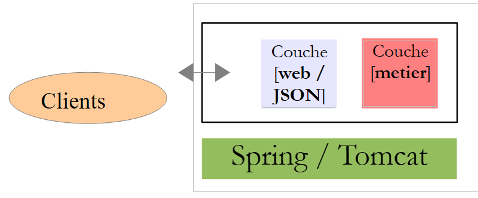 |
客户端向 [Web / JSON] 层中的特定 URL 发起请求，并收到以 JSON（JavaScript 对象表示法）格式返回的文本响应。
我们将把应用程序的分析分为两个步骤：
Web/JSON 服务器
- 其 [业务] 层；
- 其基于 Spring MVC 实现的 [Web / JSON] 服务；
Android客户端
- 其 [DAO] 层；
- 其 Activity；
- 其视图；
9.2. Web 服务 / JSON
注：Web 服务 / JSON 是使用 Spring MVC 技术实现的。不熟悉该技术的读者可以：
- 直接阅读第 9.2.1 节，该节说明了如何启动服务器以及如何进行查询；
- 查阅文档《Spring MVC 和 Thymeleaf 实例》，特别是第 4 章，其中介绍了代码中使用的主要注解；
9.2.1. IntelliJ IDEA 项目
Web 服务 / JSON 具有以下架构：
 |
该架构由以下 IntelliJ IDEA 项目 [1] 实现：
 | 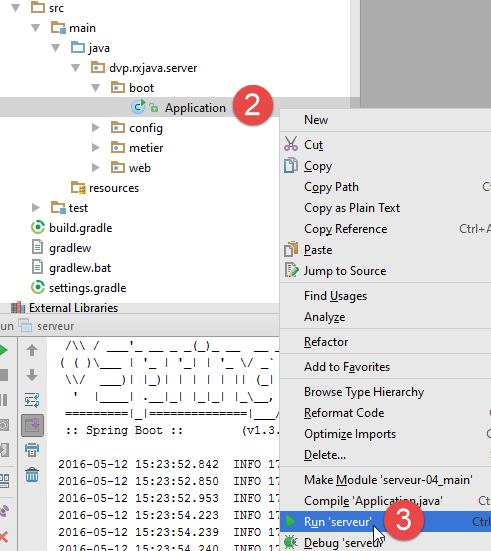 |
通过 [2-3] 启动服务器。随后将显示控制台日志：
- 第 12 行：表示该服务可在端口 8080 上访问；
- 第 10 行：Web 服务 / JSON 的唯一 URL，可通过 HTTP GET 操作访问。其参数如下：
- [a,b]：生成随机数的范围；
- [minCount, maxCount]：生成的随机数个数，其中 count 是 [minCount, maxCount] 区间内的随机数；
- [minDelay, maxDelay]：服务在返回请求的数字前等待 delay 毫秒，其中 delay 是 [minDelay, maxDelay] 区间内的一个随机数；
在浏览器中，让我们请求此 URL：
 |
我们请求：
- 区间 [100, 200] 内的随机数；
- n 个随机数，其中 n 属于区间 [10, 20]；
- 等待时间为 x 毫秒，其中 x 属于区间 [300, 400]；
在响应中：
- aleas：生成的随机数列表；
- delay：服务器设定的等待时间（单位为毫秒）；
- error：错误代码——若无错误则为 0；
- message：错误消息——若无错误则为 null；
9.2.2. 该项目的 Gradle 依赖项
 |
[server] 项目是一个由以下 [build.gradle] 文件 [1] 配置的 Gradle 项目：
// généré par http://start.spring.io/ (mai 2016)
buildscript {
ext {
springBootVersion = '1.3.5.RELEASE'
}
repositories {
mavenCentral()
}
dependencies {
classpath("org.springframework.boot:spring-boot-gradle-plugin:${springBootVersion}")
}
}
apply plugin: 'java'
apply plugin: 'spring-boot'
jar {
baseName = 'serveur'
version = '0.0.1-SNAPSHOT'
}
sourceCompatibility = 1.8
targetCompatibility = 1.8
repositories {
mavenCentral()
}
dependencies {
compile('org.springframework.boot:spring-boot-starter-web')
}
- 第 1 行：一条说明此配置文件生成方式的注释；
- 第 4 行和第 10 行：对 [Spring Boot] 框架的依赖，该框架是 Spring 生态系统的一个分支。这个 [http://projects.spring.io/spring-boot/] 框架允许进行最简化的 Spring 配置。 基于项目类路径中存在的库，[Spring Boot] 会推断出一个合理或可能的项目配置。因此，如果 Hibernate 位于项目的类路径中，那么 [Spring Boot] 就会推断出所使用的 JPA 实现是 Hibernate，并据此配置 Spring。 开发人员不再需要手动进行这些操作。他们只需配置 [Spring Boot] 默认未配置的设置，或者那些 [Spring Boot] 默认已配置但需要明确指定的设置。无论哪种情况，开发人员所做的配置都具有优先级；
- 第 14–15 行：两个用于调用此 Gradle 文件内容的 Gradle 插件；
- 第 17–20 行：定义为本项目生成的归档文件的特性；
- 第 22–23 行：用于兼容 Java 8；
- 第 25–27 行：将在全局 Maven 仓库或本机上的本地仓库中搜索依赖项；
- 第 30 行：定义了对 [spring-boot-starter-web] 工件的依赖。该工件包含 Spring MVC 项目所需的所有归档文件，其中包括 Tomcat 服务器归档文件。该文件将用于部署 Web 应用程序。请注意，此处未指定依赖项的版本，将使用导入的 [spring-boot] 项目中指定的版本；
要更新项目，必须强制下载依赖项 [1-3]：
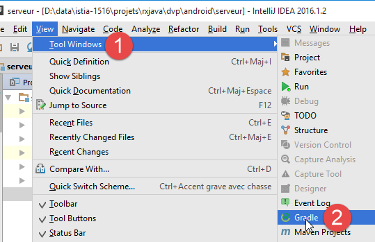 | 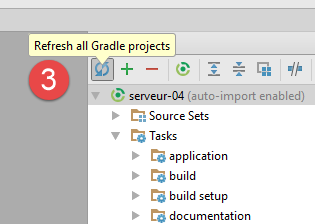 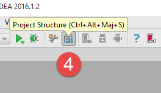 |
让我们来看看[4]这个[build.gradle]文件中包含的依赖项：
 |
这类依赖有很多。Spring Boot for the web 已经包含了 Spring MVC Web 应用程序可能需要的依赖项。这意味着其中一些可能是不必要的。Spring Boot 非常适合用于教程：
- 它包含了我们可能需要的依赖项；
- 我们将看到它极大地简化了 Spring MVC 项目的配置；
- 它内置了 Tomcat 服务器 [1]，省去了我们在外部 Web 服务器上部署应用程序的麻烦；
- 它允许我们生成一个包含上述所有依赖项的可执行 JAR 文件。该 JAR 文件可在不同平台间迁移，无需重新配置。
您可以在 Spring 生态系统网站 [http://spring.io/guides] 上找到许多使用 Spring Boot 的示例。既然我们已经了解了项目的依赖项，就可以继续研究代码了。
9.2.3. [业务]层
 |
 |
[业务]层将实现以下[IMetier]接口：
package dvp.rxjava.server.metier;
public interface IMetier {
// random numbers in the [a,b] interval
// n numbers are generated with n itself a random number in the interval [minCount, maxCount]
// numbers are generated after a delay of milliseconds,
// where [delay] is itself a random number in the interval [minDelay, maxDelay]
public AleasMetier getAleas(int a, int b, int minCount, int maxCount, int minDelay, int maxDelay);
}
该接口与第 8.4 节中讨论的 Swing 环境中的接口几乎完全相同。在第 8 行中，[getAleas] 方法返回以下 [AleasMetier] 类型：
package dvp.rxjava.server.metier;
import java.util.List;
public class AleasMetier {
// fields
private int delay;
private List<Integer> aleas;
// manufacturers
public AleasMetier(){
}
public AleasMetier(int delay, List<Integer> aleas){
this.delay=delay;
this.aleas=aleas;
}
public AleasMetier(AleasMetier aleasMetier){
this.delay=aleasMetier.delay;
this.aleas=aleasMetier.aleas;
}
// getters and setters
...
}
实现 [IMetier] 接口的 [Metier] 类的代码如下：
package dvp.rxjava.server.metier;
import com.fasterxml.jackson.core.JsonProcessingException;
import com.fasterxml.jackson.databind.ObjectMapper;
import org.springframework.beans.factory.annotation.Autowired;
import org.springframework.stereotype.Service;
import java.util.*;
@Service
public class Metier implements IMetier {
@Autowired
private ObjectMapper mapper;
@Override
public AleasMetier getAleas(int a, int b, int minCount, int maxCount, int minDelay, int maxDelay) {
// random numbers in the [a,b] interval
// n numbers are generated with n itself a random number in the interval [minCount, maxCount]
// numbers are generated after a delay of milliseconds,
// where [delay] is itself a random number in the interval [minDelay, maxDelay]
// some checks
List<String> messages = new ArrayList<>();
int erreur = 0;
if (a < 0) {
messages.add("Le nombre a de l'intervalle [a,b] de génération doit être supérieur à 0");
erreur |= 2;
}
if (a >= b) {
messages.add("Dans l'intervalle [a,b] de génération, on doit avoir a< b");
erreur |= 4;
}
if (minCount < 0) {
messages.add("Le nombre min de l'intervalle [min,count] du nombre de valeurs générées doit être supérieur à 0");
erreur |= 16;
}
if (minCount > maxCount) {
messages.add("Dans l'intervalle [min,count] du nombre de valeurs générées, on doit avoir min<= max");
erreur |= 32;
}
if (minDelay < 0) {
messages.add("Le nombre min de l'intervalle [min,count] du délai d'attente doit être supérieur à 0");
erreur |= 64;
}
if (minCount > maxCount) {
messages.add("Dans l'intervalle [min,count] du délai d'attente, on doit avoir min<= max");
erreur |= 128;
}
if (maxDelay > 5000) {
messages.add("L'attente en millisecondes avant la génération des nombres doit être dans l'intervalle [0,5000]");
erreur |= 256;
}
// mistakes?
if (!messages.isEmpty()) {
throw new AleasException(String.join(" [---] ", messages), erreur);
}
// random number generator
Random random = new Random();
// waiting?
int delay = minDelay + random.nextInt(maxDelay - minDelay + 1);
if (delay > 0) {
try {
Thread.sleep(delay);
} catch (InterruptedException e) {
String message = null;
try {
message = mapper.writeValueAsString(Arrays.asList(String.format("[%s : %s]", e.getClass().getName(), e.getMessage())));
} catch (JsonProcessingException e1) {
throw new AleasException(e1,512);
}
throw new AleasException(message, 1024);
}
}
// result generation
int count = minCount + random.nextInt(maxCount - minCount + 1);
List<Integer> nombres = new ArrayList<Integer>();
for (int i = 0; i < count; i++) {
nombres.add(a + random.nextInt(b - a + 1));
}
// return result
return new AleasMetier(delay,nombres);
}
}
我们不再对该类进行详细说明：它与第 8.4 节中 Swing 环境中的类类似。我们仅需注意以下几点：
- 第 10 行：Spring 注解 [@Service]，它会促使 Spring 将该类实例化为单例（singleton），并将其引用提供给其他 Spring 组件。此处本可使用其他 Spring 注解来达到相同效果；
- 第13–14行：注入了一个JSON映射器。Spring是一个对象容器。该容器在Web应用程序启动时被实例化，随后配置文件中定义的对象会被实例化，默认情况下为单例（singleton）。 一个 Spring 单例可以包含对其他 Spring 对象的引用。此处即为这种情况：[business] 单例（第 10–11 行）将持有对 [mapper] 单例（第 13–14 行）的引用。这被称为依赖注入。将一个单例注入另一个单例有两种方式：
- 按类型注入：若待注入的单例是该类型下唯一的 Spring 对象，则可采用此方式。此处第 13–14 行中的注入（类型为 ObjectMapper）即属于此情况；
- 通过名称注入：当多个 Spring 对象具有相同类型时适用。此时，必须添加 @Qualifier("singletonName") 注解来指定单例的名称；
[Metier] 类会抛出 [AleaException] 类型的异常：
package android.exemples.server.metier;
public class AleaException extends RuntimeException {
// error code
private int code;
// manufacturers
public AleaException() {
}
public AleaException(String detailMessage, int code) {
super(detailMessage);
this.code = code;
}
public AleaException(Throwable throwable, int code) {
super(throwable);
this.code = code;
}
public AleaException(String detailMessage, Throwable throwable, int code) {
super(detailMessage, throwable);
this.code = code;
}
// getters and setters
public int getCode() {
return code;
}
public void setCode(int code) {
this.code = code;
}
}
- 第 3 行：[AleasException] 继承自 [RuntimeException] 类。因此，它是一个未处理的异常（无需使用 try/catch 进行处理）；
- 第 6 行：向 [RuntimeException] 类添加了一个错误代码；
9.2.4. Web 服务 / JSON
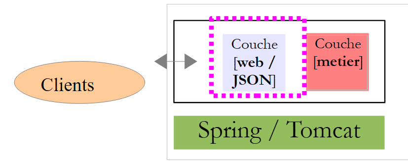 |
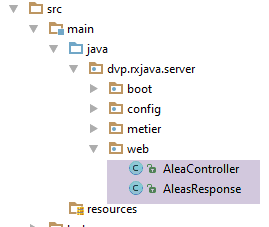 |
该 Web 服务/JSON 由 Spring MVC 实现。Spring MVC 通过以下方式实现 MVC（模型-视图-控制器）架构模式：
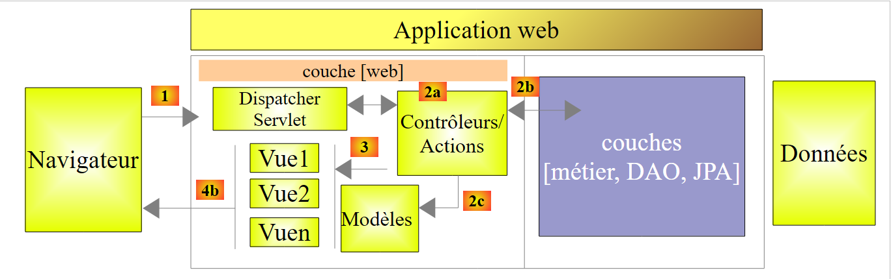 |
客户端请求的处理流程如下：
- 请求 – 请求的 URL 格式为 http://machine:port/contexte/Action/param1/param2/....?p1=v1&p2=v2&... [Dispatcher Servlet] 是 Spring 框架中负责处理传入 URL 的类。它会将 URL “路由”到必须处理该请求的操作（Action）。这些操作是称为 [控制器（Controller）] 的特定类中的方法。 此处 MVC 中的 C 代表 [Dispatcher Servlet、Controller、Action] 这一链条。如果未配置任何 Action 来处理传入的 URL，[Dispatcher Servlet] 将返回请求的 URL 未找到（404 NOT FOUND 错误）；
- 处理
- 被选中的 Action 可以使用 [Dispatcher Servlet] 传递给它的参数。这些参数可能来自多个来源：
- URL 的路径 [/param1/param2/...]，
- URL 参数 [p1=v1&p2=v2]，
- 浏览器随请求提交的参数；
- 在处理用户请求时，操作可能需要调用 [业务] 层 [2b]。一旦处理完客户端的请求，可能会触发各种响应。一个典型的例子是：
- 若请求无法正确处理，则返回错误页面
- 否则则显示确认页面
- 操作会指示显示特定的视图 [3]。该视图将展示被称为视图模型的数据。这就是 MVC 中的 M。操作将创建这个 M 模型 [2c]，并指示显示 V 视图 [3]；
- 响应——选定的视图 V 使用操作生成的模型 M 来初始化其必须发送给客户端的 HTML 响应中的动态部分，然后发送该响应。
对于 Web 服务/JSON，上述架构稍作修改：
 |
- 在 [4a] 中，模型（即一个 Java 类）通过 JSON 库转换为 JSON 字符串；
- 在 [4b] 中，该 JSON 字符串被发送至浏览器；
让我们回到应用程序的 [Web] 层：
 |
在我们的应用程序中，只有一个控制器：
该 Web 服务/JSON 将向其客户端发送如下所示的 [AleasResponse] 类型的响应：
package dvp.rxjava.server.web;
import dvp.rxjava.server.metier.AleasMetier;
public class AleasResponse extends AleasMetier {
// error code
private int erreur;
// error message
private String message;
// manufacturers
public AleasResponse() {
}
public AleasResponse(int erreur, String message, AleasMetier aleasMetier) {
super(aleasMetier);
this.erreur = erreur;
this.message = message;
}
// getters and setters
public void setAleasMetier(AleasMetier aleasMetier) {
this.setDelay(aleasMetier.getDelay());
this.setAleas(aleasMetier.getAleas());
}
...
}
- 第 5 行：[AleasResponse] 类继承自 [AleasMetier] 类，因此继承了其所有属性（aleas、delay）；
- 第 8 行：一个错误代码（若无错误则为 0）；
- 第 10 行：如果 error != 0，则返回错误消息；若无错误，则返回 null；
[AleasController] 控制器如下：
package dvp.rxjava.server.web;
import org.springframework.beans.factory.annotation.Autowired;
import org.springframework.stereotype.Controller;
import org.springframework.web.bind.annotation.PathVariable;
import org.springframework.web.bind.annotation.RequestMapping;
import org.springframework.web.bind.annotation.RequestMethod;
import org.springframework.web.bind.annotation.ResponseBody;
import com.fasterxml.jackson.core.JsonProcessingException;
import com.fasterxml.jackson.databind.ObjectMapper;
import dvp.rxjava.server.metier.AleasException;
import dvp.rxjava.server.metier.IMetier;
@Controller
public class AleasController {
// business layer
@Autowired
private IMetier metier;
@Autowired
private ObjectMapper mapper;
// random numbers in [a,b]
// n numbers are generated with n in the range [minCount, maxCount]
// numbers are generated after a delay of milliseconds,
// where [delay] is a random number in the range [minDelay, maxDelay]
@RequestMapping(value = "/{a}/{b}/{minCount}/{maxCount}/{minDelay}/{maxDelay}", method = RequestMethod.GET, produces = "application/json")
@ResponseBody
public String getAleas(@PathVariable("a") int a, @PathVariable("b") int b, @PathVariable("minCount") int minCount,
@PathVariable("maxCount") int maxCount, @PathVariable("minDelay") int minDelay,
@PathVariable("maxDelay") int maxDelay) throws JsonProcessingException {
// we prepare the answer
AleasResponse response = new AleasResponse();
// the business layer is used to generate random numbers
try {
response.setAleasMetier(metier.getAleas(a, b, minCount, maxCount, minDelay, maxDelay));
} catch (AleasException e) {
// case of error (code and message)
response.setErreur(e.getCode());
response.setMessage(e.getMessage());
}
// we return the answer jSON
return mapper.writeValueAsString(response);
}
}
- 第 16 行：[@Controller] 注解将 [AleasController] 类设为 Spring 单例。它还表明该类包含用于处理 Web 应用程序中特定 URL 请求的方法。此处仅在第 29 行有一个；
- 第 20–21 行：[@Autowired] 注解指示 Spring 将类型为 [IMetier] 的组件注入该字段。这将对应前面的 [Metier] 类。由于我们为其添加了 [@Service] 注解，因此它被视为 Spring 组件；
- 第 22–23 行：[@Autowired] 注解指示 Spring 将类型为 [ObjectMapper] 的组件注入该字段。我们稍后将定义该组件；
- 第 31 行：[getAleas] 方法用于生成随机数。其名称无关紧要。当该方法运行时，第 31–33 行的参数已由 Spring MVC 初始化。我们稍后将了解具体实现。此外，该方法之所以运行，是因为 Web 服务器接收到针对第 29 行 URL 的 HTTP GET 请求（method 属性）；
- 第 30 行：[@ResponseBody] 注解表示该方法的结果必须原样发送给客户端。在此，我们将发送一个字符串，该字符串将是类型为 [AleasResponse] 的 JSON 字符串；
- 第 29 行：处理后的 URL 格式为 /{a}/{b}/{minCount}/{maxCount}/{minDelay}/{maxDelay}，其中 {x} 代表一个变量。这些变量在第 32–33 行被赋值给方法的参数。这是通过 @PathVariable("x") 注解实现的。 请注意，{x} 的值是 URL 的组成部分，因此类型为 String。从 String 转换为方法参数类型可能会失败。 此时 Spring MVC 会抛出异常。总结如下：若我在浏览器中请求 URL /100/200/10/20/300/400，第 31 行的 getAlias 方法将执行，其参数分别为 a=100（第 31 行）、 b=200（第 31 行）、minCount=10（第 31 行）、maxCount=20（第 32 行）、minDelay=300（第 32 行）、maxDelay=400（第 33 行）；
- 第 39 行：我们向 [business] 层请求一组随机数。请注意，[business].getRandom 方法可能会抛出异常；
- 第 42–43 行：错误处理；
- 第 46 行：将 [AleasResponse] 响应作为 JSON 字符串返回；
9.2.5. Spring 项目配置
 |
配置 Spring 有多种方法：
- 使用 XML 文件；
- 使用 Java 代码；
- 同时使用这两种方式；
我们选择使用 Java 代码来配置我们的 Web 应用程序。上文中的 [Config] 类负责处理此配置：
package dvp.rxjava.server.config;
import com.fasterxml.jackson.databind.ObjectMapper;
import org.springframework.beans.factory.annotation.Autowired;
import org.springframework.boot.context.embedded.EmbeddedServletContainerFactory;
import org.springframework.boot.context.embedded.ServletRegistrationBean;
import org.springframework.boot.context.embedded.tomcat.TomcatEmbeddedServletContainerFactory;
import org.springframework.context.ApplicationContext;
import org.springframework.context.annotation.Bean;
import org.springframework.context.annotation.ComponentScan;
import org.springframework.web.context.WebApplicationContext;
import org.springframework.web.servlet.DispatcherServlet;
import org.springframework.web.servlet.config.annotation.EnableWebMvc;
@ComponentScan(basePackages = { "dvp.rxjava.server.metier", "dvp.rxjava.server.web" })
@EnableWebMvc
public class Config {
// -------------------------------- layer configuration [web]
@Autowired
private ApplicationContext context;
@Bean
public DispatcherServlet dispatcherServlet() {
DispatcherServlet servlet = new DispatcherServlet((WebApplicationContext) context);
return servlet;
}
@Bean
public ServletRegistrationBean servletRegistrationBean(DispatcherServlet dispatcherServlet) {
return new ServletRegistrationBean(dispatcherServlet, "/*");
}
@Bean
public EmbeddedServletContainerFactory embeddedServletContainerFactory() {
return new TomcatEmbeddedServletContainerFactory("", 8080);
}
// mapper jSON
@Bean
public ObjectMapper jsonMapper() {
return new ObjectMapper();
}
}
- 第 15 行：我们告诉 Spring 在哪些包中查找要实例化的对象。它将找到两个：
- 带有 [@Service] 注解的 [Metier] 类；
- 带有 [@Controller] 注解的 [AleasController] 类；
- 第 16 行：[@EnableWebMvc] 注解会触发 Spring MVC 框架的自动配置；
- 第 19–20 行：注入 Spring 上下文（Spring 对象的容器）。此注入是必要的，因为第 22–26 行中的对象需要它；
- Spring 配置文件可通过带有 [@Bean] 注解的方法定义新的 Spring 对象。该方法的返回值即成为 Spring 对象；
- 第 22–26 行：定义 Spring MVC 框架的 Servlet，该 Servlet 将 HTTP 请求路由到正确的控制器和方法。[DispatcherServlet] 是 Spring 类；
- 第 28–31 行：此处指定该 Servlet 处理所有 URL；
- 第 33–36 行：该 Bean 的存在将激活项目归档中包含的 Tomcat 服务器。它将在 8080 端口监听请求；
- 第 39–42 行：一个 JSON 映射器。这就是被注入到 Spring 对象 [Metier] 和 [AleasController] 中的那个；
9.2.6. 运行 Web 服务器
 |
该项目通过以下可执行类 [Application] 运行：
package android.exemples.server.boot;
import android.exemples.server.config.Config;
import org.springframework.boot.SpringApplication;
public class Application {
public static void main(String[] args) {
// application execution
SpringApplication.run(Config.class, args);
}
}
- 第 6 行：[Application] 类是一个可执行类（第 7–10 行）；
- 第 9 行：静态方法 [SpringApplication.run] 是 [Spring Boot]（第 4 行）中用于启动应用程序的方法。其第一个参数是配置该项目的 Java 类。此处即为我们刚刚描述的 [Config] 类。第二个参数是传递给 [main] 方法（第 7 行）的参数数组。此处将不包含任何参数；
关于实际执行过程，请参阅第 9.2.1 节。
9.3. Android 客户端
注意：以下 Android 项目相当复杂。它需要对 Android 有扎实的理解，相关知识可参考例如 [使用 Android Studio 进行 Android 平板编程入门]。
ActivityViewsLayer[DAO]UserServer
客户端将包含两个组件：
- 一个 [展示] 层（视图 + 活动）；
- 一个 [DAO] 层，用于与我们之前学习的 [Web / JSON] 服务进行通信。
9.3.1. RxAndroid
为了与随机数服务器进行异步通信，Android客户端将使用RxAndroid库。该库将RxJava扩展到了Android生态系统中。与我们之前在Swing应用程序中所做的一样，我们将仅使用RxAndroid提供的一个扩展：调度器[AndroidSchedulers.mainThread()]。Android GUI遵循与Swing界面相同的规则：
- 事件在称为事件循环或 UI 线程的单线程中处理；
- 当事件触发异步操作时，若需利用这些操作的结果更新用户界面，则必须在 UI 线程中获取结果；
Android 客户端：
- 将向随机数服务器发送多个异步请求。这些请求将在客户端使用调度器的线程 [Schedulers.io()] 执行；
- 这些异步请求将返回可观察对象，并被合并为单个可观察对象；
- 该可观察对象将在客户端通过 RxAndroid 提供的调度器 [AndroidSchedulers.mainThread()] 进行监听；
9.3.2. IntelliJ IDEA 项目
该 Android 项目命名为 [client]：
 | 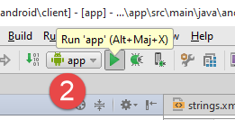  |
它将通过 [2] 运行。
注意：执行结果在很大程度上取决于所用 IntelliJ IDEA IDE 的配置。在非我的机器上，上述执行步骤 [2] 很可能无法一次成功。对于初学者而言，正确配置 IntelliJ IDEA IDE 以运行此项目可能是一项艰巨的任务。以下是几个需要注意的要点：
- 在 [3] 中，访问项目结构；
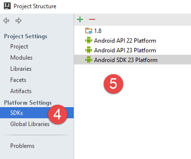 | 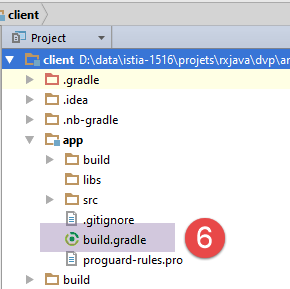 |
- 在 [4-5] 中，展示了我机器上安装的 JDK 和 Android SDK。请注意，JDK 1.8 并非必需。Android 不支持某些 Java 8 特性，包括 lambda 表达式。因此，为了实例化函数式接口，我们将使用匿名类。因此，JDK 1.6 即可满足需求。不过，分发的项目已配置为使用 JDK 1.8；
用于配置 Android 项目的 [build.gradle] [6] 文件如下：
buildscript {
repositories {
mavenCentral()
mavenLocal()
}
dependencies {
// replace with the current version of the Android plugin
classpath 'com.android.tools.build:gradle:1.5.0'
}
}
apply plugin: 'com.android.application'
dependencies {
compile 'com.android.support:appcompat-v7:23.1.1'
compile 'com.android.support:design:23.1.1'
compile fileTree(dir: 'libs', include: ['*.jar'])
compile 'org.springframework.android:spring-android-rest-template:1.0.1.RELEASE'
compile 'org.codehaus.jackson:jackson-mapper-asl:1.9.9'
compile 'io.reactivex:rxandroid:1.1.0'
}
repositories {
jcenter()
}
android {
compileSdkVersion 23
buildToolsVersion "23.0.3"
defaultConfig {
applicationId "android.aleas"
minSdkVersion 15
targetSdkVersion 23
versionCode 1
versionName "1.0"
}
buildTypes {
release {
minifyEnabled false
proguardFiles getDefaultProguardFile('proguard-android.txt'), 'proguard-rules.pro'
}
}
compileOptions {
sourceCompatibility JavaVersion.VERSION_1_6
targetCompatibility JavaVersion.VERSION_1_6
}
packagingOptions {
exclude 'META-INF/ASL2.0'
exclude 'META-INF/NOTICE'
exclude 'META-INF/LICENSE'
exclude 'META-INF/NOTICE.txt'
exclude 'META-INF/LICENSE.txt'
exclude 'META-INF/notice.txt'
exclude 'META-INF/license.txt'
}
}
根据已安装的 Android SDK 版本，第 8 行、第 24–25 行以及第 29 行中的版本号可能需要进行修改。
要安装新的 Android SDK，请按以下步骤使用 SDK 管理器 [1]：
  |  |
该项目已配置为：
- SDK API 23 [2]；
- SDK 构建工具 23.0.3 [3]；
- SDK 工具 25.1.3 [4]
最后，请在 [local.properties] 文件 [4] 的第 11 行中验证 Android SDK 路径：
## This file is automatically generated by Android Studio.
# Do not modify this file -- YOUR CHANGES WILL BE ERASED!
#
# This file must *NOT* be checked into Version Control Systems,
# as it contains information specific to your local configuration.
#
# Location of the SDK. This is only used by Gradle.
# For customization when using a Version Control System, please read the
# header note.
#Thu Apr 07 14:51:14 CEST 2016
sdk.dir=C\:\\Users\\st\\AppData\\Local\\Android\\sdk
9.3.3. 运行 IntelliJ IDEA 项目
一旦为项目创建了合适的环境，即可按以下方式运行：
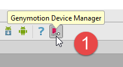 |  |  |
- 在 [1] 中，启动 Genymotion Android 模拟器；
- 在 [2] 中，运行 [app] 运行配置；
- 在 [3] 中，创建一个运行配置；
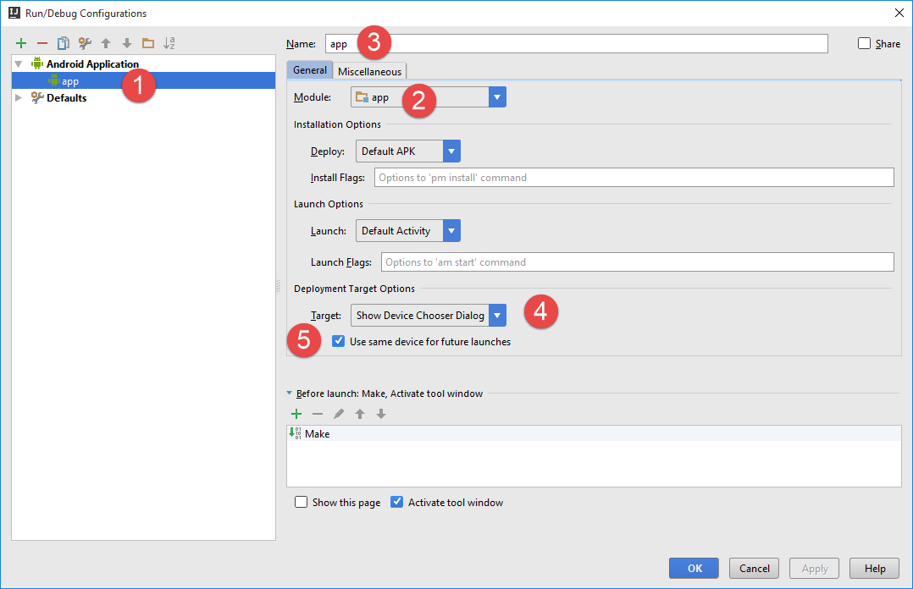 |
- 在 [1, 3] 中，该配置被命名为 [app]；
- 在[2]中，它对应于名为[app]的模块的执行；
- 在[4]中，我们指定在执行期间，IDE应为我们提供一个执行设备。在此，该设备始终为Genymotion模拟器；
- 在 [5] 中，我们指定该设备应用于该配置的所有执行；
在 Genymotion 模拟器上运行该项目需先执行以下初始命令：

要确定在 [1] 中应输入什么，请打开一个 DOS 命令窗口并输入以下 [ipconfig] 命令：
C:\Program Files\Console2>ipconfig
Configuration IP de Windows
Carte Ethernet Ethernet :
Statut du média. . . . . . . . . . . . : Média déconnecté
Suffixe DNS propre à la connexion. . . : ad.univ-angers.fr
Carte réseau sans fil Connexion au réseau local* 3 :
Statut du média. . . . . . . . . . . . : Média déconnecté
Suffixe DNS propre à la connexion. . . :
Carte Ethernet VirtualBox Host-Only Network :
Suffixe DNS propre à la connexion. . . :
Adresse IPv6 de liaison locale. . . . .: fe80::8076:36e6:3b38:5e98%16
Adresse IPv4. . . . . . . . . . . . . .: 192.168.56.2
Masque de sous-réseau. . . . . . . . . : 255.255.255.0
Passerelle par défaut. . . . . . . . . :
Carte Ethernet Ethernet 2 :
Suffixe DNS propre à la connexion. . . :
Adresse IPv6 de liaison locale. . . . .: fe80::d0d9:e01f:ddde:1f4b%14
Adresse IPv4. . . . . . . . . . . . . .: 192.168.95.1
Masque de sous-réseau. . . . . . . . . : 255.255.255.0
Passerelle par défaut. . . . . . . . . :
Carte réseau sans fil Wi-Fi :
Suffixe DNS propre à la connexion. . . :
Adresse IPv6 de liaison locale. . . . .: fe80::54b3:afe5:e199:2206%10
Adresse IPv4. . . . . . . . . . . . . .: 192.168.0.13
Masque de sous-réseau. . . . . . . . . : 255.255.255.0
Passerelle par défaut. . . . . . . . . : fe80::523d:e5ff:fe0c:4ad9 192.168.0.1
请输入 [1] 选择您机器的其中一个 IP 地址（第 20、28、32 行）。如果您启用了 Windows 防火墙，可能需要将其禁用，以便 Android 模拟器能够连接到随机数服务器。
使用上述信息执行异步请求将得到以下结果：

每次请求都会返回包含以下字段的 JSON 响应：
- aleas：服务器生成的随机数；
- idClient：请求 ID；
- on：执行该请求的客户端线程；
- requestAt：请求时间；
- responseAt：收到响应的时间；
- delay：服务器返回响应前观察到的等待时间；
- error：错误代码——若无错误则为 0；
- message：错误消息——若无错误则为 null；
- observedAt：观察到响应的时间；
- observedOn：观察响应的线程。在此处，该值始终为 [main]，指代 UI 线程；
由于请求是异步的，且服务器端的等待时间是随机的，因此响应返回的顺序是零散的。
9.3.4. 项目的 Gradle 依赖项
该项目需要依赖项，我们在 [app/build.gradle] 文件中进行了指定：
dependencies {
compile 'com.android.support:appcompat-v7:23.1.1'
compile 'com.android.support:design:23.1.1'
compile fileTree(dir: 'libs', include: ['*.jar'])
compile 'org.springframework.android:spring-android-rest-template:1.0.1.RELEASE'
compile 'org.codehaus.jackson:jackson-mapper-asl:1.9.9'
compile 'io.reactivex:rxandroid:1.1.0'
}
- 第 2–3 行的依赖项是使用 SDK 23 的 Android 项目的标准依赖项；
- 第 5 行的依赖引入了 Spring [RestTemplate] 对象，用于管理 [DAO] 层与服务器之间的通信；
- 第 6 行的依赖引入了应用程序使用的 JSON 库 [Jackson]；
- 第 7 行的依赖引入了 RxAndroid 库（以及随附的 RxJava 库），UI 层通过该库与 [DAO] 层进行通信；
9.3.5. Android 应用程序清单
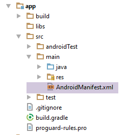 |
<?xml version="1.0" encoding="utf-8"?>
<manifest xmlns:android="http://schemas.android.com/apk/res/android"
package="android.aleas">
<uses-permission android:name="android.permission.INTERNET"/>
<application
android:allowBackup="true"
android:icon="@mipmap/ic_launcher"
android:label="@string/app_name"
android:supportsRtl="true"
android:theme="@style/AppTheme">
<activity
android:name="android.aleas.activity.MainActivity"
android:label="@string/app_name"
android:theme="@style/AppTheme.NoActionBar">
<intent-filter>
<action android:name="android.intent.action.MAIN"/>
<category android:name="android.intent.category.LAUNCHER"/>
</intent-filter>
</activity>
</application>
</manifest>
- 第5行：必须允许访问互联网；
9.3.6. [DAO] 层
 |
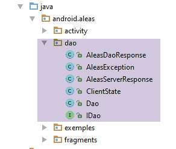 | 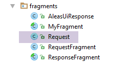 |
9.3.6.1. [DAO]层的[IDao]接口
[DAO]层的接口如下：
package android.aleas.dao;
import android.aleas.fragments.Request;
import rx.Observable;
public interface IDao {
// random numbers in the [a,b] interval
// n numbers are generated with n itself a random number in the interval [minCount, maxCount]
// numbers are generated after a delay of milliseconds,
// where [delay] is itself a random number in the interval [minDelay, maxDelay]
public Observable<AleasDaoResponse> getAleas(final Request request);
// URL of the web service
public void setUrlServiceWebJson(String url);
// max wait time (ms) for server response to connection request
// max wait time (ms) for server response to a request
public void setClientTimeouts(int connectTimeout, int readTimeOut);
}
- 第 12 行：[DAO] 层中异步生成随机数的函数；
- 第 15 行：向 [DAO] 实现提供随机数生成服务的 URL；
- 第 19 行：为 [DAO] 实现设置最大超时时间，以避免服务器无响应时出现过长的等待；
[getAleas] 方法通过以下 [Request] 对象接收所有参数：
package android.aleas.fragments;
public class Request {
// request no
int id;
// user input
private int nbRequests;
private int a;
private int b;
private int minCount;
private int maxCount;
private int minDelay;
private int maxDelay;
// manufacturers
public Request() {
}
public Request(int id, int nbRequests, int a, int b, int minCount, int maxCount, int minDelay, int maxDelay) {
this.id = id;
this.nbRequests = nbRequests;
this.a = a;
this.b = b;
this.minCount = minCount;
this.maxCount = maxCount;
this.minDelay = minDelay;
this.maxDelay = maxDelay;
}
// getters and setters
...
}
在这里，我们可以看到服务器 URL 中需要查询的大部分参数。
[getAleas] 方法返回 Observable<AleasDaoResponse> 类型，其中 [AleasDaoResponse] 类的定义如下：
package android.aleas.dao;
import java.util.List;
public class AleasDaoResponse {
// error code
private int erreur;
// error message
private String message;
// server waiting time
private int delay;
// random numbers delivered by the server
private List<Integer> aleas;
// customer status
private ClientState clientState;
// manufacturers
public AleasDaoResponse() {
}
public AleasDaoResponse(int erreur, String message, int delay, List<Integer> aleas, ClientState clientState) {
this.erreur = erreur;
this.message = message;
this.delay = delay;
this.aleas = aleas;
this.clientState = clientState;
}
// getters and setters
...
}
[ClientState] 类型的定义如下：
package android.aleas.dao;
import org.codehaus.jackson.map.annotate.JsonFilter;
import java.text.SimpleDateFormat;
import java.util.Calendar;
public class ClientState {
// name of execution thread
private String on;
// query time
private String requestAt;
// response time
private String responseAt;
// customer id
private int idClient;
// manufacturer
public ClientState() {
on = Thread.currentThread().getName();
requestAt = getTimeStamp();
}
public ClientState(int idClient) {
this();
this.idClient = idClient;
}
// private methods
private String getTimeStamp() {
return new SimpleDateFormat("hh:mm:ss:SSS").format(Calendar.getInstance().getTime());
}
// getters and setters
...
}
- 第 11 行：[DAO] 层的执行线程；
- 第 13 行：请求时间；
- 第15行：响应时间；
- 第17行：请求编号；
字段 [on, requestAt, idClient] 由客户端在请求开始时初始化。字段 [responseAt] 在客户端收到服务器响应时初始化。
9.3.6.2. [DAO] 层的实现
 |
[IDao] 接口由以下 [Dao] 类实现：
package android.aleas.dao;
import android.aleas.fragments.Request;
import android.util.Log;
import org.codehaus.jackson.map.ObjectMapper;
import org.codehaus.jackson.map.ser.impl.SimpleBeanPropertyFilter;
import org.codehaus.jackson.map.ser.impl.SimpleFilterProvider;
import org.codehaus.jackson.type.TypeReference;
import org.springframework.http.client.HttpComponentsClientHttpRequestFactory;
import org.springframework.http.converter.StringHttpMessageConverter;
import org.springframework.web.client.RestTemplate;
import rx.Observable;
import rx.Subscriber;
import java.util.HashMap;
import java.util.Locale;
import java.util.Map;
public class Dao implements IDao {
// customer REST
private RestTemplate restTemplate;
// URL service
private String urlServiceWebJson;
// mapper jSON
private ObjectMapper mapper;
// manufacturers
public Dao() {
// mapper jSON
mapper = new ObjectMapper();
}
@Override
public Observable<AleasDaoResponse> getAleas(final Request request) {
...
}
@Override
public void setUrlServiceWebJson(String urlServiceWebJson) {
// set the URL of the REST service
this.urlServiceWebJson = urlServiceWebJson;
}
@Override
public void setClientTimeouts(int connectTimeout, int readTimeOut) {
...
}
}
- 第 22 行：负责与随机数服务器通信的 [RestTemplate] 对象；
- 第 24 行：生成服务的 URL——由第 41 行的 [setUrlServiceWebJson] 方法设置；
- 第 27 行：用于反序列化随机数服务器发送的 JSON 字符串的 JSON 映射器；
- 第 30–33 行：类构造函数；
- 第 32 行：创建第 27 行中的 JSON 映射器；
[setClientTimeouts] 方法如下：
// client REST
private RestTemplate restTemplate;
...
@Override
public void setClientTimeouts(int connectTimeout, int readTimeOut) {
// on fixe le timeout des requêtes du client REST
HttpComponentsClientHttpRequestFactory factory = new HttpComponentsClientHttpRequestFactory();
factory.setReadTimeout(readTimeOut);
factory.setConnectTimeout(connectTimeout);
restTemplate = new RestTemplate(factory);
restTemplate.getMessageConverters().add(new StringHttpMessageConverter());
}
- 客户端与 Web 服务器/JSON 的通信由第 2 行中的 [RestTemplate] 对象处理。我们尚未对其进行初始化。[setClientTimeouts] 方法负责此操作；
- 第 8 行：[HttpComponentsClientHttpRequestFactory] 类由 [spring-android-rest-template] 依赖项提供。它允许我们设置服务器响应的最大等待时间（第 9–10 行）；
- 第 11 行：我们创建 [RestTemplate] 对象，它将作为与 Web 服务通信的通道。我们将刚刚创建的 [factory] 对象作为参数传递给它；
- 第 12 行：客户端与服务器的交互可以采取多种形式。通信通过文本行进行，我们必须告知 [RestTemplate] 对象如何处理这些文本行。为此，我们需要提供转换器——即能够处理文本行的类。 转换器的选择通常基于随文本行附带的 HTTP 头部。根据这些头部信息，[RestTemplate] 对象将从其拥有的转换器中选择最适合当前情况的一个。在此，我们仅使用一个转换器，即 String --> String 转换器，这意味着从服务器接收到的 String 类型数据将不会进行任何转换。
[getAleas] 方法最为复杂：
@Override
public Observable<AleasDaoResponse> getAleas(final Request request) {
Log.d("rxjava", String.format("service [DAO] pour client n° %s%n", request.getId()));
// service execution
return Observable.create(new Observable.OnSubscribe<AleasDaoResponse>() {
@Override
public void call(Subscriber<? super AleasDaoResponse> subscriber) {
try {
// URL of the service: /{a}/{b}/{minCount}/{maxCount}/{minDelay}/{maxDelay}
String urlService = String.format("%s/%s/%s/%s/%s/%s/%s",
urlServiceWebJson, request.getA(), request.getB(), request.getMinCount(),
request.getMaxCount(), request.getMinDelay(), request.getMaxDelay());
// customer information
ClientState clientState = new ClientState(request.getId());
// synchronous http request
String response = executeRestService("get", urlService, null);
// deserialization of jSON server response
AleasServerResponse aleasServerResponse = mapper.readValue(
response,
new TypeReference<AleasServerResponse>() {
});
// mistake?
int erreur = aleasServerResponse.getErreur();
if (erreur != 0) {
// we forward the exception
subscriber.onError(new AleasException(aleasServerResponse.getMessage(), erreur));
} else {
// enter the time of reception
clientState.setResponseAt();
// we forward the result to the subscriber
subscriber.onNext(
new AleasDaoResponse(aleasServerResponse.getErreur(), aleasServerResponse.getMessage(),
aleasServerResponse.getDelay(), aleasServerResponse.getAleas(), clientState));
}
} catch (Exception ex) {
// we forward the exception to the subscriber
subscriber.onError(ex);
} finally {
// we signal the end of the observable
// at runtime, we note that this method has no effect if method [onError] has been called previously - in line with theory - so we could place this instruction only in try
subscriber.onCompleted();
}
}
});
}
- 第 2 行：请注意，我们必须返回类型 [Observable<AleasResponse>]；
- 第 3 行：在 Android 控制台输出日志；
- 第 5 行：[RestTemplate] 对象确保与服务器的同步通信。这意味着发起请求的执行线程将被阻塞，直到收到响应为止。在 Swing 示例中，我们曾看到如何使用 [Observable.create] 方法将同步操作转换为异步操作。这里我们采用相同的方法；
- 第 7 行：第 5 行中 [Observable.OnSubscribe<AleasDaoResponse>] 接口的 [call] 方法。当观察者订阅可观察对象时，会调用此方法；
- 第 10–12 行：构建随机数服务的 URL；
- 第 14 行：初始化 [ClientState] 对象。此处记录了请求的时间；
- 第 16 行：同步 HTTP 请求。返回一个 JSON 响应。[executeRestService] 方法期望三个参数：
- 用于查询服务的 HTTP 方法；
- 服务 URL；
- 待提交的对象（类型为 Object），若 HTTP 方法非 POST 则为 null；
- 第18-21行：将接收到的JSON字符串反序列化为[AleasServerResponse]类型。该类型的定义如下：
package android.aleas.dao;
import java.util.List;
public class AleasServerResponse {
// error code
private int erreur;
// error message
private String message;
// server waiting time
private int delay;
// random numbers
private List<Integer> aleas;
// getters and setters
...
}
- 第 23 行：获取服务器发送的错误代码；
- 第 24–26 行：如果发生错误，将异常转发给订阅者；
- 第 29 行：更新 [clientState]，该值将作为响应的一部分发送给订阅者；
- 第 31–33 行：将响应发送给订阅者。其类型为 [AleasDaoResponse]；
- 第 35–37 行：统一处理所有错误情况。最可能出现的错误是网络错误；
- 第 41 行：发送传输结束通知；
9.3.7. 应用程序视图
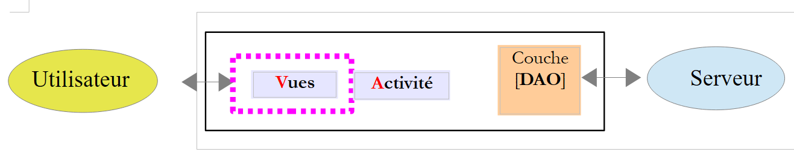 |
 |
该应用程序包含以下两个视图：
请求视图

响应视图

9.3.7.1. [MyFragment] 类
有两个片段：
- [RequestFragment] 用于请求；
- [ResponseFragment] 用于响应；
这两个片段都继承自以下 [MyFragment] 类：
package android.aleas.fragments;
import android.aleas.activity.MainActivity;
import android.aleas.activity.Session;
import android.support.v4.app.Fragment;
public abstract class MyFragment extends Fragment {
// ------------- data common to all fragments
protected MainActivity activity;
protected Session session;
public abstract void onRefresh();
}
- 第 7 行：[MyFragment] 类继承自 Android 的 [Fragment] 类；
- 第 10–11 行：所有片段共享的数据；
- 第 10 行：每个片段都了解应用程序的单一活动；
- 第 11 行：片段之间通过会话进行通信；
- 第 13 行：在显示片段之前，系统会要求其使用会话内容刷新自身。该方法被声明为抽象方法，因为它由子类实现。因此，该类本身也被声明为抽象类（第 7 行）；
[Session] 类包含应用程序中各个片段共享的数据。其代码如下：
 |
package android.aleas.activity;
import android.aleas.fragments.Request;
import android.widget.ArrayAdapter;
public class Session {
// application activity
private MainActivity activity;
// number of requests
private int nbRequests;
// request characteristics
private int a;
private int b;
private int minCount;
private int maxCount;
private int minDelay;
private int maxDelay;
// URL web service / jSON
private String urlWebJson;
// operation began
private boolean onAir;
// idem but a little later in time
private boolean operationStarted;
// the name of the example chosen by the user from the list of examples
private String exampleName;
// its number in the list of fragments
private int examplePosition;
// the example spinner adapter in the query view
private ArrayAdapter<CharSequence> spinnerExemplesAdapter;
// methods
public void setInfos(int nbRequests, int a, int b, int minCount, int maxCount, int minDelay, int maxDelay, String urlWebJson, String exampleName, int examplePosition) {
this.nbRequests = nbRequests;
this.a = a;
this.b = b;
this.minCount = minCount;
this.maxCount = maxCount;
this.minDelay = minDelay;
this.maxDelay = maxDelay;
this.urlWebJson = urlWebJson;
this.exampleName = exampleName;
this.examplePosition = examplePosition;
}
public Request getRequest() {
return new Request(0, nbRequests, a, b, minCount, maxCount, minDelay, maxDelay);
}
// getters and setters
...
}
第 46 行中的方法创建了 [Request] 对象，该对象封装了用户在请求视图中提供的所有信息：
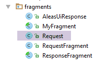 |
package android.aleas.fragments;
public class Request {
// request no
int id;
// user input
private int nbRequests;
private int a;
private int b;
private int minCount;
private int maxCount;
private int minDelay;
private int maxDelay;
// manufacturers
public Request() {
}
public Request(int id, int nbRequests, int a, int b, int minCount, int maxCount, int minDelay, int maxDelay) {
this.id = id;
this.nbRequests = nbRequests;
this.a = a;
this.b = b;
this.minCount = minCount;
this.maxCount = maxCount;
this.minDelay = minDelay;
this.maxDelay = maxDelay;
}
// getters and setters
....
}
9.3.7.2. 请求的 [RequestFragment] 片段
请求片段包含以下组件：

该应用程序仅有一个视图，该视图包含两个选项卡：
- [1]：请求选项卡；
- [2]：响应选项卡；
[RequestFragment] 片段的组件如下：
编号 | 类型 | 名称 | 角色 |
3 | EditText | edtNbRequests | 向随机数生成器服务发送的请求次数 |
4 | EditText | edtA, edtB | 数字生成区间的边界 [a,b]； |
5 | EditText | edtMinCount, edtMaxCount | 该服务生成 count 个数字，其中 count 是区间 [minCount, maxCount] 内的随机数 |
6 | EditText | edtMinDelay, edtMaxDelay | 该服务在生成数字前等待 delay 毫秒，其中 delay 是 [minDelay, maxDelay] 范围内的随机数 |
7 | 编辑文本 | edtUrlServiceRest | 随机数生成服务的 URL； |
8 | 旋转按钮 | spinnerExamples | 示例的下拉列表。每个示例演示了 [Observable] 类的特定方法； |
8 | 按钮 | btnExecute | 用于触发调用数字生成服务的按钮； |
报告输入错误：
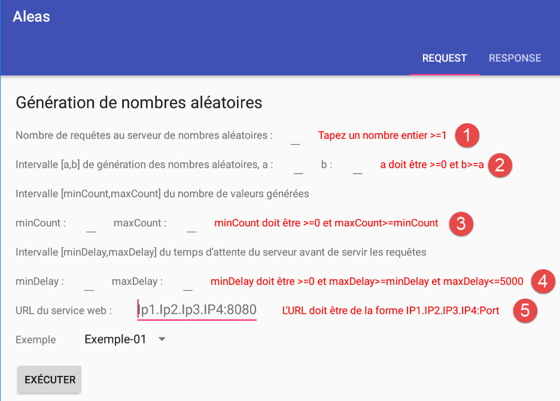
组件 1 至 6 是 [TextView] 组件，名称如下（按顺序）：txtErrorRequests、txtErrorInterval、txtErrorCount、txtErrorDelay、txtWebServiceErrorMessage。
9.3.7.3. 响应的 [ResponseFragment] 片段
响应片段包含以下组件：

编号 | 类型 | 名称 | 角色 |
1 | TextView | infoResponses | 已接收的回复数量 |
2 | ListView | listResponses | 从服务器接收到的 JSON 字符串列表 |
3 | 按钮 | btnCancel | 用于取消向服务器的请求 |
9.3.7.4. Android 活动 [MainActivity]
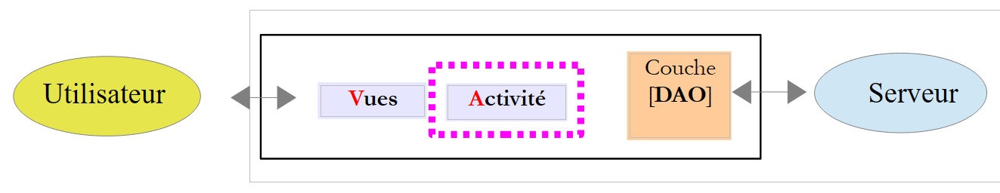 |
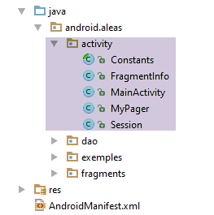 |
[MainActivity] 类显示以下视图：
<?xml version="1.0" encoding="utf-8"?>
<android.support.design.widget.CoordinatorLayout xmlns:android="http://schemas.android.com/apk/res/android"
xmlns:tools="http://schemas.android.com/tools"
xmlns:app="http://schemas.android.com/apk/res-auto"
android:id="@+id/main_content"
android:layout_width="match_parent"
android:layout_height="match_parent"
android:fitsSystemWindows="true"
tools:context="android.arduinos.ui.activity.MainActivity">
<!-- application bar -->
<android.support.design.widget.AppBarLayout
android:id="@+id/appbar"
android:layout_width="match_parent"
android:layout_height="wrap_content"
android:paddingTop="@dimen/appbar_padding_top"
android:theme="@style/AppTheme.AppBarOverlay">
<!-- toolbar -->
<android.support.v7.widget.Toolbar
android:id="@+id/toolbar"
android:layout_width="match_parent"
android:layout_height="?attr/actionBarSize"
android:background="?attr/colorPrimary"
app:popupTheme="@style/AppTheme.PopupOverlay"
app:layout_scrollFlags="scroll|enterAlways">
<!-- waiting image -->
<ProgressBar
android:id="@+id/loadingPanel"
android:layout_width="wrap_content"
android:layout_height="wrap_content"
android:indeterminate="true"/>
</android.support.v7.widget.Toolbar>
<!-- tab container -->
<android.support.design.widget.TabLayout
android:id="@+id/tabs"
android:layout_width="match_parent"
android:layout_height="wrap_content"/>
</android.support.design.widget.AppBarLayout>
<!-- view container -->
<android.aleas.activity.MyPager
android:id="@+id/container"
android:layout_width="match_parent"
android:layout_height="match_parent"
android:paddingLeft="20dp"
android:paddingRight="20dp"
android:layout_marginBottom="100dp"
app:layout_behavior="@string/appbar_scrolling_view_behavior"/>
</android.support.design.widget.CoordinatorLayout>
该视图的组件如下：
lines | 类型 | 名称 | 角色 |
20-34 | 工具栏 | 工具栏 | 应用程序工具栏 |
29-34 | 进度条 | 加载面板 | 在处理用户请求时显示的占位图 |
37-40 | TabLayout | 标签 | 应用程序的标签栏 |
44-51 | MyPager | 容器 | 用于显示应用程序各个片段的容器 |
[MyPager] 类的定义如下：
package android.aleas.activity;
import android.content.Context;
import android.support.v4.view.ViewPager;
import android.util.AttributeSet;
import android.view.MotionEvent;
public class MyPager extends ViewPager {
// swipe control
private boolean isSwipeEnabled;
// manufacturers
public MyPager(Context context) {
super(context);
}
public MyPager(Context context, AttributeSet attrs) {
super(context, attrs);
}
// method redefinition
@Override
public boolean onInterceptTouchEvent(MotionEvent event) {
// swipe authorized?
if (isSwipeEnabled) {
return super.onInterceptTouchEvent(event);
} else {
return false;
}
}
@Override
public boolean onTouchEvent(MotionEvent event) {
// swipe authorized?
if (isSwipeEnabled) {
return super.onTouchEvent(event);
} else {
return false;
}
}
// setter
public void setSwipeEnabled(boolean isSwipeEnabled) {
this.isSwipeEnabled = isSwipeEnabled;
}
}
- [MyPager] 类继承自标准的 Android [ViewPager] 类。我们使用 [MyPager] 类而非 [ViewPager] 类，仅仅是因为我们希望禁用滑动功能：默认情况下，使用 [ViewPager] 类时，可以通过滑动（向左或向右滑动）在标签页之间切换。而在此处，我们不希望出现这种行为；
- 第 11 行：控制滑动功能的布尔变量（第 26 行和第 36 行）；
- 第 44–46 行：用于初始化第 11 行字段的方法；
Android 活动 [MainActivity] 的骨架如下：
package android.aleas.activity;
import android.aleas.R;
import android.aleas.dao.AleasDaoResponse;
import android.aleas.dao.Dao;
import android.aleas.dao.IDao;
import android.aleas.fragments.MyFragment;
import android.aleas.fragments.Request;
import android.aleas.fragments.RequestFragment;
import android.os.Bundle;
import android.support.design.widget.TabLayout;
import android.support.v4.app.FragmentManager;
import android.support.v4.app.FragmentPagerAdapter;
import android.support.v7.app.AppCompatActivity;
import android.support.v7.widget.Toolbar;
import android.view.View;
import android.widget.ArrayAdapter;
import android.widget.ProgressBar;
import rx.Observable;
public class MainActivity extends AppCompatActivity implements IDao {
// layer [DAO]
private IDao dao;
// the session
private Session session;
// manufacturer
public MainActivity() {
// parent
super();
// session
session = new Session();
// DAO
dao = new Dao();
}
// getters
public Session getSession() {
return session;
}
// implémentation IDao ----------------------------------------
@Override
public Observable<AleasDaoResponse> getAleas(Request request) {
return dao.getAleas(request);
}
@Override
public void setUrlServiceWebJson(String url) {
dao.setUrlServiceWebJson(url);
}
@Override
public void setClientTimeouts(int connectTimeout, int readTimeOut) {
dao.setClientTimeouts(connectTimeout, readTimeOut);
}
}
- 第 21 行：[MainActivity] 类继承了标准的 Android 类 [AppCompatActivity]。因此，它是一个标准的 Android 活动；
- 第 21 行：[MainActivity] 类实现了 [IDao] 接口；
回到应用程序架构：
 |
由于 Activity 实现了 [DAO] 层接口，因此视图无需了解 [DAO] 层：当视图需要与服务器交互时，其事件处理程序将直接与 [Activity] 层进行通信。
- 第 24 行：对 [DAO] 层的引用，该引用由第 35 行的构造函数初始化；
- 第 26 行：对片段共享的会话的引用，该会话由第 33 行的构造函数初始化；
- 第 46–59 行：[IDao] 接口的实现；
[MainActivity] 类按以下方式初始化其关联视图的组件：
// barre d'outils
private Toolbar toolbar;
// gestionnaire de fragments
private MyPager mViewPager;
// conteneur d'onglets
private TabLayout tabLayout;
// image d'attente
private ProgressBar loadingPanel;
...
@Override
public void onCreate(Bundle savedInstanceState) {
// classique
super.onCreate(savedInstanceState);
setContentView(R.layout.activity_main);
// session
session.setActivity(this);
// configuration timeouts de la couche [DAO]
setClientTimeouts(Constants.CONNECT_TIMEOUT, Constants.READ_TIMEOUT);
// composants
mViewPager = (MyPager) findViewById(R.id.container);
toolbar = (Toolbar) findViewById(R.id.toolbar);
loadingPanel = (ProgressBar) findViewById(R.id.loadingPanel);
tabLayout = (TabLayout) findViewById(R.id.tabs);
// toolbar
setSupportActionBar(toolbar);
// au départ on n'a qu'un seul onglet
TabLayout.Tab tab = tabLayout.newTab();
tab.setText("Request");
tabLayout.addTab(tab);
// gestionnaire d'évt
tabLayout.setOnTabSelectedListener(new TabLayout.OnTabSelectedListener() {
@Override
public void onTabSelected(TabLayout.Tab tab) {
// un onglet a été sélectionné - on change le fragment affiché par le conteneur de fragments
int position = tab.getPosition();
if (position == 0) {
// onglet requête
showView(0);
} else {
// onglet réponse - dépend de l'exemple choisi
showView(session.getExamplePosition());
}
}
@Override
public void onTabUnselected(TabLayout.Tab tab) {
}
@Override
public void onTabReselected(TabLayout.Tab tab) {
}
});
// création des fragments des réponses
createResponseFragments();
// gestion image d'attente
loadingPanel.setVisibility(View.INVISIBLE);
}
这段代码在 Activity 中相当常见。让我们来解释几个要点：
- 第 19 行引用了以下 [Constants] 类：
package android.aleas.activity;
abstract public class Constants {
final static public int VUE_REQUEST = 0;
final static public int VUE_RESPONSE = 1;
final static public int CONNECT_TIMEOUT = 1000;
final static public int READ_TIMEOUT = 6000;
final static public int DELAY_MAX = 5000;
final static public String EXAMPLES_PACKAGE = "android.aleas.exemples";
}
- 第 31–33 行：我们创建了第一个标题为 [Request] 的标签页。此时，内存中将包含以下内容：
- [Request] 片段；
- n 个类型为 [ExampleXXFragment] 的片段；
第一个标签页将始终显示 [Request] 片段。第二个标签页将显示与用户所选示例对应的 [ExampleXXFragment] 片段。因此，第二个标签页显示的片段会随时间变化；
- 第 37–48 行：用户点击其中一个标签页时执行的代码；
- 第 43 行：显示片段 #0；
- 第 46 行：显示当前正在使用（显示中）的片段。其编号从会话中获取；
- 第 62 行：为 [RequestFragment] 视图（第 1 个标签页）中的示例选择器中所有示例创建片段；
- 第 65 行：当前隐藏加载图标；
要理解 [showView] 方法（第 43、46 行）和 [createResponseFragments] 方法，我们首先需要介绍内存中的片段管理器（该类包含在 MainActivity Java 文件中）：
// fragment manager - must define getItem, getCount methods
public class SectionsPagerAdapter extends FragmentPagerAdapter {
// managed fragments
private MyFragment[] fragments;
// manufacturer
public SectionsPagerAdapter(FragmentManager fm, MyFragment[] fragments) {
super(fm);
this.fragments = fragments;
}
// must render fragment no. position
@Override
public MyFragment getItem(int position) {
// the fragment
return fragments[position];
}
// makes the number of fragments to manage
@Override
public int getCount() {
// no. of fragments
return fragments.length;
}
}
}
- [SectionsPagerAdapter] 类继承自 Android 的 [FragmentPagerAdapter] 类。它重写了父类的两个方法：
- 第 15 行的 [getItem] 方法；
- [getCount] 方法，第 22 行；
- [SectionsPagerAdapter] 类包含应用程序的所有片段。这些片段存储在第 5 行。请注意，它们的类型为 [MyFragment]，如第 9.3.7.1 节所述；
- 第 8 行：为了初始化自身，[SectionsPagerAdapter] 类接收其必须管理的片段；
- 第 14–18 行：[getItem] 方法返回位于 [position] 位置的片段；
- 第 21–25 行：[getCount] 方法返回片段的总数；
[createResponseFragments] 方法创建应用程序所需的所有片段：
private void createResponseFragments() {
// spinner examples
ArrayAdapter<CharSequence> adapter = ArrayAdapter.createFromResource(this, R.array.exemples, android.R.layout.simple_spinner_item);
// Specify the layout to use when the list of choices appears
adapter.setDropDownViewResource(android.R.layout.simple_spinner_dropdown_item);
// put the adapter in the session so that the [Request] view can retrieve it
session.setSpinnerExemplesAdapter(adapter);
...
}
- 第 3 行：我们为示例转盘创建了一个适配器，在此情况下，该适配器是一个字符串列表，其中包含示例的名称。这些名称存在于 [layout/exemples.xml] 文件中：
 |
[examples.xml] 文件包含以下代码：
<!-- exemples -->
<resources>
<string-array name="exemples">
<item>Exemple-01</item>
<item>Exemple-02</item>
<item>Exemple-03</item>
<item>Exemple-04</item>
</string-array>
</resources>
第 1 行：此文件是 [createFromResource] 方法的第二个参数。在 [R.array.examples] 中，[examples] 是数组的名称（参见上文第 3 行），而不是文件名。
- 第 5 行：我们将一个布局（显示管理器）与适配器关联起来。现在，适配器既拥有数据，也拥有其显示模式；
- 第 7 行：我们将适配器添加到会话中。需要该适配器的 [RequestFragment] 将在此处获取它；
接下来继续查看 [createResponseFragments] 方法的代码：
private void createResponseFragments() {
// spinner examples
ArrayAdapter<CharSequence> adapter = ArrayAdapter.createFromResource(this, R.array.exemples, android.R.layout.simple_spinner_item);
// Specify the layout to use when the list of choices appears
adapter.setDropDownViewResource(android.R.layout.simple_spinner_dropdown_item);
// put the adapter in the session so that the [Request] view can retrieve it
session.setSpinnerExemplesAdapter(adapter);
// create fragment table (1 query, n responses)
MyFragment[] tFragments = new MyFragment[adapter.getCount() + 1];
// query fragment
tFragments[0] = new RequestFragment();
// answer fragments
for (int i = 1; i < tFragments.length; i++) {
// we construct the name of the fragment to be instantiated, corresponding to the example chosen by the user
// this name must be the full name with its package - here it is directly associated with the example number in the spinner
String exampleClassName = String.format("%s.Example%02dFragment", Constants.EXAMPLES_PACKAGE, i);
// instantiate the fragment associated with the example
MyFragment fragment;
try {
// class instantiation
fragment = (MyFragment) Class.forName(exampleClassName).getConstructors()[0].newInstance(new Object[]{});
} catch (Exception e) {
e.printStackTrace();
return;
}
// the fragment has been created - we put it in the table
tFragments[i] = fragment;
}
// instantiation of the fragment manager with these new fragments
mSectionsPagerAdapter = new SectionsPagerAdapter(getSupportFragmentManager(), tFragments);
// Set up the ViewPager with the sections adapter.
mViewPager.setAdapter(mSectionsPagerAdapter);
// page navigation - this instruction is important
// here we say that on both sides of the displayed view, we must keep [tFragments.length] views initialized
// this means that all fragments used by the application are in memory and initialized
// if you don't do this then the default [OffscreenPageLimit] is 1
// so if the fragment displayed is no. 3, only fragments 2 and 4 will be initialized
// this is done by calling the [onCreateView] method of these 2 fragments - this means that in this method, you must plan to
// regenerate the visual appearance of the fragment the last time it was used
// there's code that can't stand being run twice - it creates a huge mess and is complex to manage
// here we've chosen to avoid these difficulties - in the logs, we can see that when the application starts, all fragments are created
// and their method [onCreateView] executed - it's never executed again -
mViewPager.setOffscreenPageLimit(tFragments.length);
// inhibit swiping between fragments
mViewPager.setSwipeEnabled(false);
}
- 第 9 行：创建将包含应用所有片段的数组；
- 第 11 行：第一个片段是查询片段；
- 第 13–28 行：我们将创建与示例数量相同的片段。这些片段均继承自响应片段 [ResponseFragment]，并仅实现该示例特有的功能：生成被观测的值。这些值在不同示例之间各不相同；
- 第 16 行：一个示例片段有一个标准名称：ExampleXXFragment，其中 XX 是它在示例选择器中的位置加 1。XX 也是该示例在片段管理器中的片段编号；
- 第 21 行：从选择器中实例化示例 #i 的片段：
- Class.forName(exampleName)：将片段加载到内存中；
- Class.forName(exampleName).getConstructors()[0]：获取该类第一个构造函数的引用。ExampleXXFragment 类仅有一个构造函数，因此将获取该构造函数的引用；
- Class.forName(exampleName).getConstructors()[0].newInstance(new Object[]{}) 使用上一步获取的构造函数实例化一个 ExampleXXFragment 类型的对象。new Object[]{} 表示传递给该构造函数的参数。由于 ExampleXXFragment 类的构造函数不期望任何参数，因此传递了一个空对象数组；
- 第 27 行：将此片段添加到片段数组中；
- 第 30 行：我们看到片段管理器的构造函数 [SectionsPagerAdapter] 期望将要管理的片段数组作为参数。现在我们将该数组传递给构造函数；
- 第 22 行：此处将与 [MainActivity] 关联的视图的片段容器 [mViewPager] 与片段管理器关联：片段容器 [mViewPager] 用于显示片段管理器中的片段；
- 第 43 行：请阅读注释——该指令本质上规定，无论当前显示哪个片段，所有片段都必须保持代码设定的状态。因此当我们返回时，会发现它处于我们离开时的状态；
- 第 45 行：片段容器 [mViewPager] 的类型为 [MyPager]，这会禁用滑动操作；
[MainActivity.showView] 方法如下：
// display view n° [position]
private void showView(int position) {
// refresh the fragment before displaying it
mSectionsPagerAdapter.getItem(position).onRefresh();
// displays the requested view - goes directly to the view (second parameter set to false)
// without this parameter, the user defaults to the desired view, quickly displaying intermediate views - undesirable behavior
mViewPager.setCurrentItem(position, false);
}
- 第 3 行：我们希望显示编号为 #position 的片段；
- 第 4 行：从片段管理器请求该片段，然后对其进行刷新。由于上次显示时会话可能已发生变化，因此该片段必须检查会话以确定是否需要更新；
- 第 7 行：片段由 [ViewPager] 显示。由于它已与片段管理器关联，因此将显示片段 #[position]——即我们在第 4 行刚刚刷新过的那个；
最后，我们来看两个用于管理等待的方法：
public void beginWaiting() {
// gestion image d'attente
loadingPanel.setVisibility(View.VISIBLE);
}
public void cancelWaiting() {
// gestion image d'attente
loadingPanel.setVisibility(View.INVISIBLE);
// fin exécution
session.setOnAir(false);
session.setOperationStarted(false);
}
9.3.7.5. [RequestFragment] 片段
[RequestFragment] 类的定义如下：
package android.aleas.fragments;
import android.aleas.R;
import android.aleas.activity.Constants;
import android.aleas.activity.MainActivity;
import android.os.Bundle;
import android.util.Log;
import android.view.LayoutInflater;
import android.view.View;
import android.view.ViewGroup;
import android.widget.*;
import java.net.URI;
import java.net.URISyntaxException;
public class RequestFragment extends MyFragment {
// URL of the web service
private EditText edtUrlServiceRest;
private TextView txtMsgErreurUrlServiceWeb;
// number of requests
private EditText edtNbRequests;
private TextView txtErrorRequests;
// generation interval
private EditText edtA;
private EditText edtB;
private TextView txtErrorIntervalle;
// delay
private EditText edtMinDelay;
private EditText edtMaxDelay;
private TextView txtErrorDelay;
// number of values generated
private EditText edtMinCount;
private EditText edtMaxCount;
private TextView txtErrorCount;
// button
private Button btnExecuter;
// list of answers
private ListView listReponses;
private TextView infoReponses;
// spinner examples
private Spinner spinnerExemples;
// seizures
private int nbRequests;
private int a;
private int b;
private String urlServiceWebJson;
private int minDelay;
private int maxDelay;
private int minCount;
private int maxCount;
// manufacturer
public RequestFragment() {
super();
Log.d("rxjava", "RequestFragment constructor");
}
@Override
public View onCreateView(LayoutInflater inflater, ViewGroup container, Bundle savedInstanceState) {
Log.d("rxjava", "RequestFragment onCreateView");
// recover activity and session
activity = (MainActivity) getActivity();
session = activity.getSession();
// create the fragment view from its definition XML
View view = inflater.inflate(R.layout.request, container, false);
// components
edtUrlServiceRest = (EditText) view.findViewById(R.id.editTextUrlServiceWeb);
txtMsgErreurUrlServiceWeb = (TextView) view.findViewById(R.id.textViewErreurUrl);
edtNbRequests = (EditText) view.findViewById(R.id.edt_nbrequests);
txtErrorRequests = (TextView) view.findViewById(R.id.txt_error_nbrequests);
edtA = (EditText) view.findViewById(R.id.edt_a);
edtB = (EditText) view.findViewById(R.id.edt_b);
txtErrorIntervalle = (TextView) view.findViewById(R.id.txt_errorIntervalle);
edtMinDelay = (EditText) view.findViewById(R.id.edt_minDelay);
edtMaxDelay = (EditText) view.findViewById(R.id.edt_maxDelay);
txtErrorDelay = (TextView) view.findViewById(R.id.txt_error_delay);
edtMinCount = (EditText) view.findViewById(R.id.edt_minCount);
edtMaxCount = (EditText) view.findViewById(R.id.edt_maxCount);
txtErrorCount = (TextView) view.findViewById(R.id.txt_error_count);
btnExecuter = (Button) view.findViewById(R.id.btn_Executer);
listReponses = (ListView) view.findViewById(R.id.lst_reponses);
infoReponses = (TextView) view.findViewById(R.id.txt_Reponses);
spinnerExemples = (Spinner) view.findViewById(R.id.spinnerExemples);
// execute] button
btnExecuter.setVisibility(View.VISIBLE);
btnExecuter.setOnClickListener(new View.OnClickListener() {
public void onClick(View arg0) {
doExecuter();
}
});
// initially no error messages
txtErrorRequests.setVisibility(View.INVISIBLE);
txtErrorIntervalle.setVisibility(View.INVISIBLE);
txtMsgErreurUrlServiceWeb.setVisibility(View.INVISIBLE);
txtErrorCount.setVisibility(View.INVISIBLE);
txtErrorDelay.setVisibility(View.INVISIBLE);
// spinner examples
spinnerExemples.setAdapter(session.getSpinnerExemplesAdapter());
// result
return view;
}
...
}
- 第 16 行：[RequestFragment] 类继承自 [MyFragment] 类（参见第 9.3.7.1 节）；
- 第 18–42 行：片段的视觉组件（参见第 9.3.7.2 节）；
- 第 45–52 行：表单中的用户输入；
- 当 [MainActivity] 活动创建应用程序中的所有片段时，构造函数（第 55–58 行）和 [onCreateView] 方法会被执行。此过程仅发生一次；
- 第 61 行：[onCreateView] 方法的代码是标准的。请注意第 102 行，示例中的下拉列表适配器是从会话中获取的。另请注意第 91 行，点击 [执行] 按钮的操作由 [doExecute] 方法处理；
- 第 64–65 行：[activity] 和 [session] 字段属于父类 [MyFragment]；
[doExecute] 方法如下：
// seizures
private int nbRequests;
private int a;
private int b;
private String urlServiceWebJson;
private int minDelay;
private int maxDelay;
private int minCount;
private int maxCount;
...
private void doExecuter() {
// valid entries?
if (isPageValid()) {
// we put info in session
session.setInfos(nbRequests, a, b, minCount, maxCount, minDelay, maxDelay, urlServiceWebJson, spinnerExemples.getSelectedItem().toString(), spinnerExemples.getSelectedItemPosition() + 1);
// store the URL of the web service
activity.setUrlServiceWebJson(session.getUrlWebJson());
Log.d("rxjava", String.format("RequestFragment doExecuter, session=%s, session.position=%s%n", session, session.getExamplePosition()));
// action in progress
session.setOnAir(true);
// but not started
session.setOperationStarted(false);
// the answer fragment is displayed
activity.selectTab(Constants.VUE_RESPONSE);
// we start waiting
beginWaiting();
}
}
- 第 15 行：我们不再对 [ispageValid] 方法进行说明。该方法用于检查条目的有效性，仅当所有条目均有效时才返回 true。在此情况下，这些条目将用于初始化第 2 至 9 行中的字段；
- 第 17 行：将各项输入保存到会话中：
- [spinnerExemples.getSelectedItem().toString()] 是用户选中的示例名称，并存储在 [session.exampleName] 中；
- [spinnerExemples.getSelectedItemPosition() + 1] 是与该示例关联的片段 ID，该片段已由片段管理器存储。此 ID 存储在 [session.examplePosition] 中；
- 第 19 行：Web 服务 / JSON 的 URL 被传递给 Activity，该 Activity 随后将其传递给 [DAO] 层；
- 第 21–24 行：请注意，一项操作即将开始；
- 第 26 行：将显示响应标签页。要理解后续发生的情况，请回顾代码 [MainActivity.selectTab]：
// sélection d'un onglet
public void selectTab(int position) {
// il y a au plus 2 onglets
// au départ il n'y en a qu'un, celui de la requête
// si l'onglet demandé est le n° 1 et que celui-ci n'existe pas encore, alors il faut le créer
if (position == 1 && tabLayout.getTabCount() == 1) {
// 1 onglet de +
TabLayout.Tab tab = tabLayout.newTab();
tab.setText("Response");
tabLayout.addTab(tab);
}
// on sélectionne par programme l'onglet, ce qui va déclencher l'événement [onTabSelected]
// qui va associer la bonne vue à cet onglet
tabLayout.getTabAt(position).select();
}
- 最初，该 Activity 仅创建了请求标签页（标签页 #0）；
- 第 6–11 行：如果响应标签页（标签 #1）尚未创建，则创建它；
- 第14行：我们选择标签页编号（0或1）。这会将[onTabSelected]事件放入Android应用事件循环的队列中；
[MainActivity] 中 [onTabSelected] 事件的处理程序如下：
@Override
public void onTabSelected(TabLayout.Tab tab) {
// un onglet a été sélectionné - on change le fragment affiché par le conteneur de fragments
int position = tab.getPosition();
if (position == 0) {
// onglet requête
showView(0);
} else {
// onglet réponse - dépend de l'exemple choisi
showView(session.getExamplePosition());
}
}
对于 [Response] 选项卡，将执行第 9 行代码。ID 为 [session.getExamplePosition()] 的片段将被显示。例如，对于 [example-03]，存储在 [session.examplePosition] 中的 ID 为 3。 随后第 10 行将显示 ID 为 3 的片段。该 Activity 最初创建的片段数组为 [RequestFragment, Example01Fragment, Example02Fragment, Example03Fragment,..]。因此，实际显示的确实是 [Example03Fragment]。其显示逻辑由以下代码实现：
// display view n° [position]
private void showView(int position) {
// refresh the fragment before displaying it
mSectionsPagerAdapter.getItem(position).onRefresh();
// displays the requested view - goes directly to the view (second parameter set to false)
// without this parameter, the user defaults to the desired view, quickly displaying intermediate views - undesirable behavior
mViewPager.setCurrentItem(position, false);
}
我们可以看到，片段在显示（第 7 行）之前会先被刷新（第 4 行）。
9.3.7.6. [ResponseFragment] 片段
[ResponseFragment] 类用于显示来自服务器的响应。其代码如下：
package android.aleas.fragments;
import android.aleas.R;
import android.aleas.activity.MainActivity;
import android.os.Bundle;
import android.util.Log;
import android.view.LayoutInflater;
import android.view.View;
import android.view.ViewGroup;
import android.widget.ArrayAdapter;
import android.widget.Button;
import android.widget.ListView;
import android.widget.TextView;
import org.codehaus.jackson.map.ObjectMapper;
import rx.Subscription;
import java.io.IOException;
import java.util.ArrayList;
import java.util.List;
public abstract class ResponseFragment extends MyFragment {
// list of answers
private ListView listReponses;
private TextView infoReponses;
// button
private Button btnAnnuler;
// mapper jSON
private ObjectMapper mapper;
protected ResponseFragment() {
super();
Log.d("rxjava", String.format("ResponseFragment (%s) constructor", this));
mapper = new ObjectMapper();
}
@Override
public View onCreateView(LayoutInflater inflater, ViewGroup container, Bundle savedInstanceState) {
// recover activity and session
activity = (MainActivity) getActivity();
session = activity.getSession();
Log.d("rxjava", String.format("ResponseFragment (%s) onCreateView%n", this));
// create the fragment view from its definition XML
View view = inflater.inflate(R.layout.response, container, false);
// components
listReponses = (ListView) view.findViewById(R.id.lst_reponses);
infoReponses = (TextView) view.findViewById(R.id.txt_Reponses);
btnAnnuler = (Button) view.findViewById(R.id.btn_Annuler);
// cancel] button
btnAnnuler.setVisibility(View.INVISIBLE);
btnAnnuler.setOnClickListener(new View.OnClickListener() {
public void onClick(View arg0) {
doAnnuler();
}
});
// result
return view;
}
...
// method to be executed (by explicit code) before each fragment display
public void onRefresh() {
...
}
}
- 第 21 行：[ResponseFragment] 类继承自 [MyFragment] 类；
- 第 23–27 行：片段的组件；
- 第 32–36 行：构造函数仅在 Activity 初始创建示例片段时执行一次。这是因为所有示例片段都继承自 [ResponseFragment] 片段。当它们被实例化时，会调用其父类 [ResponseFragment] 的构造函数；
- 第 35 行：初始化第 30 行定义的 JSON 映射器，用于显示异常堆栈的 JSON 字符串；
- 第 38–59 行：[onCreateView] 方法仅在 Activity 初始创建示例片段时执行一次。其中包含 Android 应用程序中的标准代码；
- 第 52–56 行：点击 [Cancel] 按钮时执行的方法是 [doCancel] 方法；
- 第 62–64 行：每次显示 [Response] 选项卡时，都会执行 [onRefresh] 方法；
得益于关键方法中设置的各种日志，我们可以观察到应用启动时发生的情况：
- 第 1 行：创建片段 [RequestFragment]；
- 第 2–9 行：构建应用程序中 4 个示例的片段；
- 第 10 行：初始化 [RequestFragment] 片段；
- 第11–14行：初始化应用程序中4个示例的片段；
此后，我们再也没有看到对这些方法的调用。
[ResponseFragment.onRefresh] 方法如下：
// méthode à exécuter (par code explicite) avant chaque visualisation du fragment
public void onRefresh() {
Log.d("rxjava", String.format("ResponseFragment (%s) onRefresh for %s, sessionIsOnAir=%s session.isOperationStarted=%s%n", this, activity == null ? null : activity.getSession().getExampleName(), session.isOnAir(), session.isOperationStarted()));
// exécution en cours ?
if (session.isOnAir() && !session.isOperationStarted()) {
// exécution requête
session.setOperationStarted(true);
doExecuter();
}
}
- 第 5 行：我们检查 [RequestFragment] 是否已发起请求（session.isOnAir）以及是否已启动（isOperationStarted）。如果 [RequestFragment] 已发起请求且尚未运行，则启动该操作（第 7–8 行）；
- 一旦操作启动，由于其为异步操作，用户可在两个标签页之间切换。若用户切回 [Response] 标签页时有操作正在进行，则第 7–8 行不会被执行；
第 8 行中的 [doExecute] 方法将执行用户请求的操作：
private void doExecuter() {
Log.d("rxjava", String.format("ResponseFragment (%s) doExecuter for %s%n", this, session.getExampleName()));
// start waiting
beginWaiting();
// preparation execution
subscriptions.clear();
reponses.clear();
nbInfos = 0;
// create and execute observables for the chosen example
createAndExecuteObservables();
}
// method implemented by child classes
protected abstract void createAndExecuteObservables();
- 第 10 行：创建、执行并观察可观察对象。这些操作在每个示例中各不相同。这就是为什么 [createAndExecuteObservables] 方法是抽象的（第 14 行）。它将由继承 [ResponseFragment] 类的 [ExampleXXFragment] 片段来实现；
- 第 6 行：清空订阅列表；
- 第 7 行：清空显示响应的列表；
- 第 8 行：统计已接收的响应数量；
子类 [ExampleXXFragment] 将显示其所观察元素的任务委托给以下 [showAlea] 方法：
protected void showAlea(String data) {
// one more piece of information
nbInfos++;
infoReponses.setText(String.format("Liste des réponses (%s)", nbInfos));
// 1 more answer
reponses.add(0, data);
Log.d("rxjava", data);
// maj of UI
listReponses.setAdapter(new ArrayAdapter<String>(getActivity(), android.R.layout.simple_list_item_1, android.R.id.text1, reponses));
}
- 第 1 行：我们可以看到，被监视的元素以字符串形式传入。这实际上是该元素的 JSON 字符串。这使得我们可以使用单一方法来显示被监视的元素，而无需考虑其具体的 Java 类型；
- 第 6 行：被监听的 [data] 元素被添加到响应列表的首位。因此，用户会在列表顶部看到最新的响应；
等待操作由以下 [beginWaiting] 和 [cancelWaiting] 方法管理：
private void beginWaiting() {
// we set the hourglass
activity.beginWaiting();
// the [Cancel] button is displayed
btnAnnuler.setVisibility(View.VISIBLE);
}
protected void cancelWaiting() {
// end of wait
activity.cancelWaiting();
// the [Cancel] button is hidden
btnAnnuler.setVisibility(View.INVISIBLE);
}
它们在 Activity 中调用同名的方法，仅用于显示或隐藏 [取消] 按钮。
点击 [取消] 按钮由以下代码处理：
protected void doAnnuler() {
// on annule tous les abonnements
for (Subscription s : subscriptions) {
if (!s.isUnsubscribed()) {
s.unsubscribe();
}
}
// fin de l'attente
cancelWaiting();
}
- 第3–7行：依次取消所有订阅；
9.3.8. 可观察对象的示例
9.3.8.1. 示例-01
[ExampleXXFragment] 类旨在创建、执行和监听可观察对象。监听到的值由父类 [ResponseFragment] 进行显示。
[Example01Fragment] 类如下所示：
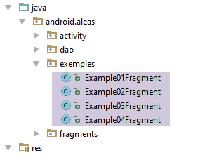 |
package android.aleas.exemples;
import android.aleas.dao.AleasDaoResponse;
import android.aleas.fragments.AleasUiResponse;
import android.aleas.fragments.Request;
import android.aleas.fragments.ResponseFragment;
import android.util.Log;
import org.codehaus.jackson.map.ObjectMapper;
import org.codehaus.jackson.map.ser.impl.SimpleBeanPropertyFilter;
import org.codehaus.jackson.map.ser.impl.SimpleFilterProvider;
import rx.Observable;
import rx.android.schedulers.AndroidSchedulers;
import rx.functions.Action0;
import rx.functions.Action1;
import rx.schedulers.Schedulers;
import java.io.IOException;
public class Example01Fragment extends ResponseFragment {
// mappers jSON
private ObjectMapper mapperAleasUiResponse;
// manufacturer
public Example01Fragment() {
super();
Log.d("rxjava", "Example01Fragment constructor");
// filters jSON
mapperAleasUiResponse = new ObjectMapper();
}
@Override
public void createAndExecuteObservables() {
Log.d("rxjava", "Example01Fragment createAndExecuteObservables");
// we ask for the random numbers
Observable<AleasDaoResponse> observable = Observable.empty();
for (int i = 0; i < session.getNbRequests(); i++) {
// observable configuration n° i
// request to server
Request request = session.getRequest();
request.setId(i);
// observable executed on computation thread
observable = observable.mergeWith(session.getActivity().getAleas(request).subscribeOn(Schedulers.io()));
}
// observation on event loop thread;
observable = observable.observeOn(AndroidSchedulers.mainThread());
// we execute all these observables
subscriptions.add(observable.subscribe(new Action1<AleasDaoResponse>() {
@Override
public void call(AleasDaoResponse aleasDaoResponse) {
showAlea(getDataFrom(aleasDaoResponse));
}
}, new Action1<Throwable>() {
...
}, new Action0() {
...
}
private String getDataFrom(AleasDaoResponse aleasDaoResponse) {
// extract the information to be displayed
String data;
try {
data = mapperAleasUiResponse.writeValueAsString(new AleasUiResponse(aleasDaoResponse));
} catch (IOException e) {
data = String.format("[%s,%s]", e.getClass().getName(), e.getMessage());
}
return data;
}
}
- 第 36 行：将生成的单个可观测量；
- 第 37–44 行：生成并配置各种可观察对象，这些对象将在第 43 行合并到第 36 行的可观察对象中；
- 第 43 行：该可观察对象在调度器 [Schedulers.io()] 的一个线程中执行。对服务器的 HTTP 请求将在该线程中执行；
- 第 46 行：最终的可观察对象在事件循环线程上被观察；
- 第 48–57 行：可观察对象的执行，即向随机数服务器发送请求。Android 目前尚不支持 Java 8 及其 lambda 表达式。因此，此处使用匿名类来实例化 RxJava 的函数式接口；
- 第 49–52 行：当观察者从可观察对象接收到 [AleasDaoResponse] 类型的新元素时执行的操作（参见第 9.3.6.1 节）；
- 第 51 行：调用父类的 [showAlea] 方法。请注意，该方法期望接收一个字符串。该字符串由第 59–68 行中的 [getDataFrom] 方法提供；
- 第 63 行：我们按如下方式返回类型为 [AleasUiResponse] 的 JSON 字符串：
package android.aleas.fragments;
import android.aleas.dao.AleasDaoResponse;
import java.text.SimpleDateFormat;
import java.util.Calendar;
public class AleasUiResponse {
// answer [DAO]
private AleasDaoResponse aleasDaoResponse;
// observation thread
private String observedOn;
// observation time
private String observedAt;
// manufacturers
public AleasUiResponse() {
observedOn = Thread.currentThread().getName();
observedAt = new SimpleDateFormat("hh:mm:ss:SSS").format(Calendar.getInstance().getTime());
}
public AleasUiResponse(AleasDaoResponse aleasDaoResponse, String on, String at) {
this.aleasDaoResponse = aleasDaoResponse;
this.observedOn = on;
this.observedAt = at;
}
public AleasUiResponse(AleasDaoResponse aleasDaoResponse) {
this();
this.aleasDaoResponse = aleasDaoResponse;
}
// getters and setters
...
}
- 在 [DAO] 层的响应（第 11 行）中，我们添加了两项信息：
- 第 13 行：观测线程；
- 第 15 行：观测时间；
让我们回到订阅代码：
@Override
public void createAndExecuteObservables() {
...
// we execute all these observables
subscriptions.add(observable.subscribe(new Action1<AleasDaoResponse>() {
@Override
public void call(AleasDaoResponse aleasDaoResponse) {
showAlea(getDataFrom(aleasDaoResponse));
}
}, new Action1<Throwable>() {
@Override
public void call(Throwable th) {
// exception is displayed
showAlea(getMessagesFromThrowable(th));
// after receiving an exception, the observable receives neither onNext nor onCompleted
// forced to cancel the subscription by hand
doAnnuler();
}
}, new Action0() {
@Override
public void call() {
// end waiting
cancelWaiting();
}
}));
}
- 第 11–18 行：观察者接收到异常的情况；
- 第 14 行：我们再次使用父类的 [showAlea] 方法来显示异常。[getMessagesFromThrowable] 方法是父类 [ResponseFragment] 的一个方法，它能根据异常生成字符串：
// messages d'une exception
protected String getMessagesFromThrowable(Throwable ex) {
// on crée une liste avec les msg d'erreur de la pile d'exceptions
List<String> messages = new ArrayList<String>();
Throwable th = ex;
while (th != null) {
messages.add(String.format("[%s, %s]", th.getClass().getName(), th.getMessage()));
th = th.getCause();
}
try {
return mapper.writeValueAsString(messages);
} catch (IOException e) {
return e.getMessage();
}
}
- 第 11 行：返回错误消息列表的 JSON 字符串（第 4 行）；
让我们回到可观察对象的订阅代码：
- 第 19–25 行：当观察者收到发射结束通知时执行的代码。随后我们取消等待（第 23 行），从而更新 GUI；
运行示例 01 会产生类似于以下的输出：
列表中的每个元素都是一个被观测值的 JSON 字符串。该 JSON 字符串的字段如下：
- aleas：服务器提供的随机数列表；
- idClient：请求编号（可以看到响应返回的顺序是零散的）；
- on：发出此值的可观察对象的执行线程；
- requestAt：客户端请求的时间；
- responseAt：服务器响应的时间；
- delay：服务器观察到的延迟；
- error：服务器返回的错误代码（0 表示无错误）；
- message：服务器返回的错误信息（null=无错误）；
- observedAt：观测到该值的时间；
- observedOn：观察该观测值的主线程；
9.3.8.2. 示例-02
[Example02Fragment] 类的定义如下：
package android.aleas.exemples;
import android.aleas.dao.AleasDaoResponse;
import android.aleas.fragments.AleasUiResponse;
import android.aleas.fragments.Request;
import android.aleas.fragments.ResponseFragment;
import android.util.Log;
import org.codehaus.jackson.map.ObjectMapper;
import rx.Observable;
import rx.android.schedulers.AndroidSchedulers;
import rx.functions.Action0;
import rx.functions.Action1;
import rx.functions.Func1;
import rx.schedulers.Schedulers;
import java.io.IOException;
public class Example02Fragment extends ResponseFragment {
// mappers jSON
private ObjectMapper mapperAleasUiResponse;
// manufacturer
public Example02Fragment() {
super();
Log.d("rxjava", "Example02Fragment constructor");
// filter jSON
mapperAleasUiResponse = new ObjectMapper();
}
public void createAndExecuteObservables() {
Log.d("rxjava", "Example02Fragment createAndExecuteObservables");
// we ask for the random numbers
Observable<AleasDaoResponse> observable = Observable.empty();
for (int i = 0; i < session.getNbRequests(); i++) {
// request preparation
Request request = session.getRequest();
request.setId(i);
// only observables with an even customer number are kept
observable = observable
.mergeWith(session.getActivity().getAleas(request).filter(new Func1<AleasDaoResponse, Boolean>() {
@Override
public Boolean call(AleasDaoResponse aleasDaoResponse) {
return aleasDaoResponse.getClientState().getIdClient() % 2 == 0;
}
})
// execution on I/O thread
.subscribeOn(Schedulers.io()));
}
// observation on event loop thread
observable = observable.observeOn(AndroidSchedulers.mainThread());
// these observables are executed
subscriptions.add(observable.subscribe(new Action1<AleasDaoResponse>() {
@Override
public void call(AleasDaoResponse aleasDaoResponse) {
showAlea(getDataFrom(aleasDaoResponse));
}
}, new Action1<Throwable>() {
@Override
public void call(Throwable th) {
showAlea(getMessagesFromThrowable(th));
doAnnuler();
}
}, new Action0() {
@Override
public void call() {
// end waiting
cancelWaiting();
}
}));
}
private String getDataFrom(AleasDaoResponse aleasDaoResponse) {
// extract the information to be displayed
String data;
try {
data = mapperAleasUiResponse.writeValueAsString(new AleasUiResponse(aleasDaoResponse));
} catch (IOException e) {
data = String.format("[%s,%s]", e.getClass().getName(), e.getMessage());
}
return data;
}
}
此示例与前一个示例（第 38 行）类似。不过，从前一个示例中获得的可观测量中，我们仅保留客户编号为偶数的那些（第 42–46 行），并使用 [filter] 方法（第 41 行）。
所得结果如下（针对10个请求）：

9.3.8.3. 示例-03
[Example03Fragment] 类的定义如下：
package android.aleas.exemples;
import android.aleas.dao.AleasDaoResponse;
import android.aleas.fragments.Request;
import android.aleas.fragments.ResponseFragment;
import android.util.Log;
import org.codehaus.jackson.map.ObjectMapper;
import rx.Observable;
import rx.android.schedulers.AndroidSchedulers;
import rx.functions.Action0;
import rx.functions.Action1;
import rx.functions.Func1;
import rx.schedulers.Schedulers;
import java.io.IOException;
import java.util.List;
public class Example03Fragment extends ResponseFragment {
// mappers jSON
private ObjectMapper mapper;
// manufacturer
public Example03Fragment() {
super();
Log.d("rxjava", "Example03Fragment constructor");
// filter jSON
mapper = new ObjectMapper();
}
public void createAndExecuteObservables() {
Log.d("rxjava", "Example03Fragment createAndExecuteObservables");
// we ask for the random numbers
Observable<List<Integer>> observable = Observable.empty();
for (int i = 0; i < session.getNbRequests(); i++) {
// request preparation
Request request = session.getRequest();
request.setId(i);
// observable configuration
observable = observable.mergeWith(session.getActivity().getAleas(request).filter(new Func1<AleasDaoResponse, Boolean>() {
@Override
public Boolean call(AleasDaoResponse aleasDaoResponse) {
return aleasDaoResponse.getClientState().getIdClient() % 2 == 0;
}
}).map(new Func1<AleasDaoResponse, List<Integer>>() {
@Override
public List<Integer> call(AleasDaoResponse aleasDaoResponse) {
return aleasDaoResponse.getAleas();
}
})
// execution on I/O thread
.subscribeOn(Schedulers.io()));
}
// observation on event loop thread
observable = observable.observeOn(AndroidSchedulers.mainThread());
// these observables are executed
subscriptions.add(observable
.subscribe(new Action1<List<Integer>>() {
@Override
public void call(List<Integer> aleas) {
showAlea(getDataFrom(aleas));
}
},
new Action1<Throwable>() {
@Override
public void call(Throwable th) {
showAlea(getMessagesFromThrowable(th));
doAnnuler();
}
},
new Action0() {
@Override
public void call() {
// end waiting
cancelWaiting();
}
}
));
}
private String getDataFrom(List<Integer> aleas) {
// extract the information to be displayed
String data;
try {
data = mapper.writeValueAsString(aleas);
} catch (IOException e) {
data = String.format("[%s,%s]", e.getClass().getName(), e.getMessage());
}
return data;
}
}
此示例与示例-02类似：
- 第 40 行：我们定义了与示例-02中相同的可观察对象；
- 第 45 行：使用 [map] 方法将前面的可观察对象发出的每个值转换为 List<Integer> 类型，即服务器生成的随机数列表；
- 第 58 行：被观察的值现在是 List<Integer> 类型；
对 10 次请求获得的结果如下：

9.3.8.4. 示例-04
[Example04Fragment] 类的定义如下：
package android.aleas.exemples;
import android.aleas.dao.AleasDaoResponse;
import android.aleas.fragments.Request;
import android.aleas.fragments.ResponseFragment;
import android.util.Log;
import org.codehaus.jackson.map.ObjectMapper;
import rx.Observable;
import rx.android.schedulers.AndroidSchedulers;
import rx.functions.Action0;
import rx.functions.Action1;
import rx.functions.Func1;
import rx.schedulers.Schedulers;
public class Example04Fragment extends ResponseFragment {
// mappers jSON
private ObjectMapper mapper;
// manufacturer
public Example04Fragment() {
super();
Log.d("rxjava", "Example04Fragment constructor");
// filter jSON
mapper = new ObjectMapper();
}
public void createAndExecuteObservables() {
Log.d("rxjava", "Example03Fragment createAndExecuteObservables");
// we ask for the random numbers
Observable<Integer> observable = Observable.empty();
for (int i = 0; i < session.getNbRequests(); i++) {
// request preparation
Request request = session.getRequest();
request.setId(i);
// observable configuration
observable = observable.mergeWith(session.getActivity().getAleas(request).filter(new Func1<AleasDaoResponse, Boolean>() {
@Override
public Boolean call(AleasDaoResponse aleasDaoResponse) {
return aleasDaoResponse.getClientState().getIdClient() % 2 == 0;
}
}).flatMap(new Func1<AleasDaoResponse, Observable<Integer>>() {
@Override
public Observable<Integer> call(AleasDaoResponse aleasDaoResponse) {
return Observable.from(aleasDaoResponse.getAleas());
}
})
// execution on an I/O thread
.subscribeOn(Schedulers.io()));
}
// observation on event loop thread
observable = observable.observeOn(AndroidSchedulers.mainThread());
// these observables are executed
subscriptions.add(observable
.subscribe(new Action1<Integer>() {
@Override
public void call(Integer alea) {
showAlea(String.valueOf(alea));
}
},
new Action1<Throwable>() {
@Override
public void call(Throwable th) {
showAlea(getMessagesFromThrowable(th));
doAnnuler();
}
},
new Action0() {
@Override
public void call() {
// end waiting
cancelWaiting();
}
}
));
}
}
此示例与示例-03类似，不同之处在于第42行不再使用 [map] 方法，而是使用了 [flatMap] 方法。
- 第 55 行：请注意，被观察值的类型现在是 Integer；
针对 10 次请求，我们得到以下结果：
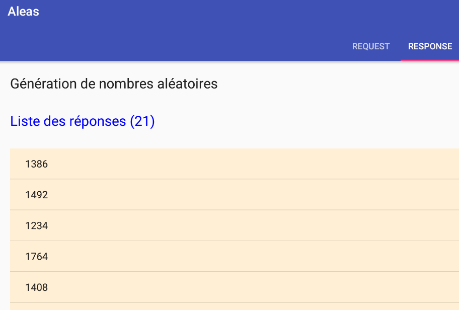
这次，观测值的数量多于请求的数量。
9.3.8.5. 示例-05
接下来，我们将概述向应用程序添加新的可观测对象示例的步骤。
假设我们要重现第 7.6.4 节中的示例 [Example22h]：
package dvp.rxjava.observables.exemples;
import dvp.rxjava.observables.utils.Process;
import dvp.rxjava.observables.utils.ProcessUtils;
import rx.Observable;
import rx.observables.GroupedObservable;
public class Exemple22h {
public static void main(String[] args) throws InterruptedException {
// process
Observable<GroupedObservable<Boolean, Integer>> obs = Observable.range(1, 10).groupBy(i -> i % 2 == 0);
Process<Integer> process = new Process<>("process", obs.concatMap(g -> g.asObservable()));
// subscriptions
ProcessUtils.subscribe(1, process);
}
}
- 可观察对象 [Observable.range(1, 10)] 的值首先通过 [groupBy] 方法（第 11 行）按偶数和奇数分组，然后通过 [concatMap] 方法（第 12 行）合并为一个可观察对象；
步骤 1
我们在文件 [examples.xml] 中创建一个新示例：
 |
<!-- exemples -->
<resources>
<string-array name="exemples">
<item>Exemple-01</item>
<item>Exemple-02</item>
<item>Exemple-03</item>
<item>Exemple-04</item>
<item>Exemple-05</item>
</string-array>
</resources>
上文已添加第 8 行。示例的名称可以是任意内容。
步骤 2
将 [Example04Fragment] 类复制为 [Example05Fragment]。此处的名称是固定的。
步骤 3
按以下方式修改 [Example05Fragment] 中的代码：
package android.aleas.exemples;
import android.aleas.dao.AleasDaoResponse;
import android.aleas.fragments.Request;
import android.aleas.fragments.ResponseFragment;
import android.util.Log;
import org.codehaus.jackson.map.ObjectMapper;
import rx.Observable;
import rx.android.schedulers.AndroidSchedulers;
import rx.functions.Action0;
import rx.functions.Action1;
import rx.functions.Func1;
import rx.observables.GroupedObservable;
import rx.schedulers.Schedulers;
public class Example05Fragment extends ResponseFragment {
// mappers jSON
private ObjectMapper mapper;
// manufacturer
public Example05Fragment() {
super();
Log.d("rxjava", "Example05Fragment constructor");
// filter jSON
mapper = new ObjectMapper();
}
public void createAndExecuteObservables() {
Log.d("rxjava", "Example05Fragment createAndExecuteObservables");
// instantiations of functional interfaces
// filter
Func1<AleasDaoResponse, Boolean> filter = new Func1<AleasDaoResponse, Boolean>() {
@Override
public Boolean call(AleasDaoResponse aleasDaoResponse) {
return aleasDaoResponse.getClientState().getIdClient() % 2 == 0;
}
};
// flatMap
Func1<AleasDaoResponse, Observable<Integer>> flatMap = new Func1<AleasDaoResponse, Observable<Integer>>() {
@Override
public Observable<Integer> call(AleasDaoResponse aleasDaoResponse) {
return Observable.from(aleasDaoResponse.getAleas());
}
};
// groupBy
Func1<Integer, Boolean> groupBy = new Func1<Integer, Boolean>() {
@Override
public Boolean call(Integer integer) {
return integer % 2 == 0;
}
};
// concatMap
Func1<GroupedObservable<Boolean, Integer>, Observable<Integer>> concatMap = new Func1<GroupedObservable<Boolean, Integer>, Observable<Integer>>() {
@Override
public Observable<Integer> call(GroupedObservable<Boolean, Integer> integerIntegerGroupedObservable) {
return integerIntegerGroupedObservable.asObservable();
}
};
// we ask for the random numbers
Observable<Integer> observable = Observable.empty();
for (int i = 0; i < session.getNbRequests(); i++) {
// request preparation
Request request = session.getRequest();
request.setId(i);
// observable configuration
observable = observable.mergeWith(session.getActivity().getAleas(request).filter(filter).flatMap(flatMap))
.groupBy(groupBy).concatMap(concatMap)
// execution on an I/O thread
.subscribeOn(Schedulers.io());
}
// observation on event loop thread
observable = observable.observeOn(AndroidSchedulers.mainThread());
// these observables are executed
subscriptions.add(observable
.subscribe(new Action1<Integer>() {
@Override
public void call(Integer alea) {
showAlea(String.valueOf(alea));
}
},
new Action1<Throwable>() {
@Override
public void call(Throwable th) {
showAlea(getMessagesFromThrowable(th));
doAnnuler();
}
},
new Action0() {
@Override
public void call() {
// end waiting
cancelWaiting();
}
}
));
}
}
- 第 67 行：表示示例 04 中的可观察对象：一个整数流；
- 第 68 行：我们将根据一个待定义的布尔条件对该整数流进行分组。我们将得到一个类型为 Observable<GroupedObservable<Boolean, Integer>> 的可观察对象，因此它会发出类型为 GroupedObservable<Boolean, Integer> 的元素；
- 第 68 行：[concatMap] 方法将从 GroupedObservable<Boolean, Integer> 类型的元素中生成 Integer 类型的元素；
- 第 32–59 行：为了使第 67–69 行中可观察对象的创建更易于阅读，我们已将各种操作符 [filter, flatMap, groupBy, concatMap] 所需的函数接口实例进行了独立提取；
- 第 47–52 行：[groupBy] 方法期望一个类型为 Func1<T,K> 的参数，其中 T 是分组元素的类型，K 是分组标准的类型。对于给定元素 T，Func1<T,K> 实例负责为该元素生成分组键 K；
- 第 48–51 行：类型为 Integer 的元素将按奇偶性分组。Func1<Integer,Boolean> 实例会根据元素应归入哪一组，生成 true 或 false 作为键。结果是两个组：键为 true 的偶数元素组和键为 false 的奇数元素组；
- 第 53–59 行：[concatMap] 方法期望接收类型为 Func1<T, Observable<R>> 的参数，并生成一个包含类型 R 元素的可观察序列。此处的类型 T 是 [groupBy] 运算符输出的类型，在本例中为 GroupedObservable<Boolean, Integer>；
- 第 57 行：从类型为 [GroupedObservable<Boolean, Integer>] 的元素出发，我们生成一个类型为 Observable<Integer> 的可观察序列。由于 [groupBy] 运算符生成了两个组，因此 [concatMap] 运算符将生成两个类型为 [Observable<Integer>] 的可观察序列。与 [flatMap] 类似，它会将它们扁平化为一个单一的可观察序列。 但与 [flatMap] 不同的是，它不会混合扁平化后可观察对象中的元素。因此，我们应该观察到两个独立的组：偶数随机数和奇数随机数。
步骤 4
我们运行该应用程序：

并得到以下结果：

- [1] 中为偶数；[2] 中为奇数；
9.3.8.6. 继续
现在邀请读者创建自己的示例，并尝试为配置发送给随机数服务器的请求的输入形式设置各种数值。
9.3.9. 结论
我们在 Android 环境中构建了以下架构：
Android客户端：
 |
[DAO] 层与生成 Android 平板电脑上显示的随机数的服务器进行通信。该服务器采用以下两层架构：
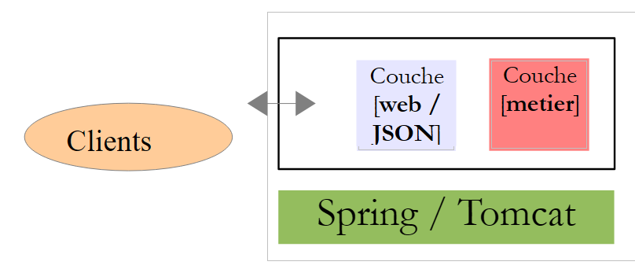 |
[DAO] 层向随机数服务器发出了 n 次 HTTP 请求，而 [swing] 层则异步等待这些请求的结果以进行显示。这 n 次 HTTP 请求均发送至同一服务器，且服务器返回了相同类型的响应。这使得我们能够将这些响应合并为一个可观察对象。
实际上，Android 应用程序通常会与不同的服务器进行通信，而我们通常不会合并这些服务器的响应。针对这些服务器的 HTTP 请求将独立处理，其结果也将通过各自独立的方法进行观察。